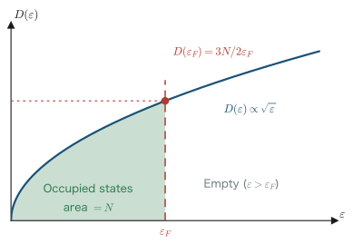
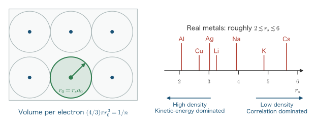
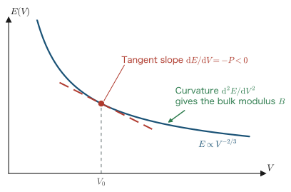
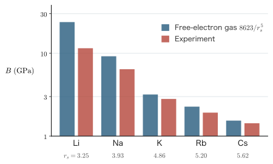

Chapter 3The Free-Electron Gas
In Chapter 2 we used the virial theorem to examine the balance between kinetic and potential energy and considered how chemical bonding comes about. In this chapter we change our viewpoint and study the simplest idealization of a many-electron system, the free-electron gas (homogeneous electron gas). It is a model in which both the Coulomb repulsion between electrons and the potential created by the nuclei are ignored entirely, and only the kinetic energy of the electrons and the Pauli exclusion principle are retained. At first sight this looks like a crude simplification, yet the model explains the basic properties of metals (the existence of the Fermi surface, the density of states, the order of magnitude of the compressibility) with surprising success. More importantly, the homogeneous electron gas is the reference system that runs through the whole of density functional theory (DFT). Just as the hydrogen atom is the “exactly solvable starting point” of the one-electron problem, the homogeneous electron gas is the “hydrogen atom” of DFT. The kinetic-energy density $t(\rho)\propto\rho^{5/3}$ derived in this chapter becomes the foundation of the Thomas–Fermi model in Chapter 4, and the picture of the Fermi sphere is the starting point when the electron–electron interaction is brought in as a perturbation in the jellium model of Chapter 7.
- The meaning of Born–von Kármán periodic boundary conditions, and the orthonormality of the plane-wave solutions
- Counting states in $k$-space: $V/(2\pi)^3$ per unit volume (per spin component)
- The Fermi sphere as the ground state, and the derivation of the Fermi wavenumber $k_F=(3\pi^2 n)^{1/3}$
- Two derivations of the density of states $D(\varepsilon)\propto\sqrt{\varepsilon}$, and the relation $D(\varepsilon_F)=3N/2\varepsilon_F$
- The kinetic energy per electron $E/N=(3/5)\varepsilon_F$, and the kinetic-energy density $t(\rho)\propto\rho^{5/3}$
- The density parameter $r_s$, and the expression for the kinetic energy $2.21/r_s^2$ Ry $=1.105/r_s^2$ Ha
- The pressure of the electron gas $P=(2/5)n\varepsilon_F$, the bulk modulus, and consistency with the virial theorem
On the system of units
In this chapter we use the Hartree atomic units ($\hbar=m_e=e=4\pi\varepsilon_0=1$) introduced in Chapter 1. The unit of length is the Bohr radius $a_0=0.529177\,\text{Å}$ and the unit of energy is the hartree (Ha), with
$$ 1\ \mathrm{Ha} = 2\ \mathrm{Ry} = 27.2114\ \mathrm{eV} $$For historical reasons, energies in rydberg (Ry) units are also widely used in the theory of the electron gas, so in this chapter we give the Ry equivalent alongside the main results. The conversion is simple: “double the value in Ha to get Ry.”
3.1 Setting Up the Model
Let us first define the model precisely. We place $N$ electrons in a cube of side $L$ and volume $V=L^3$. The interactions between the electrons are ignored. For the whole system to be electrically neutral, a positive charge that cancels the negative charge of the electrons is needed. We assume that it exists as a background charge smeared out uniformly through space, and that, precisely because it is uniform, it exerts no force on the electrons. (The model in which this background charge is treated seriously and the electron–electron interaction is restored is the jellium model, which is treated in Chapter 7.) The Hamiltonian of the $N$-electron system then consists of the kinetic energy alone:
\begin{equation} \hat{H} = \sum_{i=1}^{N}\left(-\frac{1}{2}\nabla_i^2\right). \label{eq:3-hamiltonian} \end{equation}Since this Hamiltonian is a simple sum of terms for the individual electrons, the many-electron problem immediately decomposes into one-electron problems. That is, if we solve the one-electron Schrödinger equation
\begin{equation} -\frac{1}{2}\nabla^2 \psi(\rr) = \varepsilon\,\psi(\rr) \label{eq:3-sp-schrodinger} \end{equation}and fill the resulting one-electron states (orbitals) with electrons according to the Pauli exclusion principle, we can construct the ground state of the many-electron system. In this section we first determine the solutions of Eq. $\eqref{eq:3-sp-schrodinger}$ completely under suitable boundary conditions.
3.1.1 Choice of boundary conditions: why periodic boundary conditions?
Because this is a problem in a finite box, the solutions are not determined unless we specify boundary conditions. Intuitively, the fixed-end condition that “the wave function vanishes at the walls of the box” (an infinitely deep well potential) may seem natural. However, what we want to know are the properties of the bulk (interior) of a macroscopic metal. The bulk properties are those that are determined as quantities per unit volume and per particle in the limit (the thermodynamic limit) in which $N\to\infty$ and $V\to\infty$ are taken with the density $n=N/V$ held constant. The influence of the surface enters only in proportion to the ratio of surface area to volume, $\sim L^2/L^3 = 1/L$, so in this limit the details of the boundary conditions do not affect the results. In fact, even if we adopt the fixed-end condition, the Fermi wavenumber and the density of states obtained below agree exactly in the thermodynamic limit (we verify this in Exercise 3.3 at the end of the chapter).
We may therefore choose, among boundary conditions that do not change the physics, the one that is most convenient for calculation. That is the Born–von Kármán periodic boundary conditions:
\begin{equation} \psi(x+L,\,y,\,z) = \psi(x,y,z),\qquad \psi(x,\,y+L,\,z) = \psi(x,y,z),\qquad \psi(x,\,y,\,z+L) = \psi(x,y,z). \label{eq:3-pbc} \end{equation}This amounts to regarding the system as one in which “an electron leaving through the right end of the box enters again from the left end,” or, in other words, “all of space repeats periodically, with a box of side $L$ as the unit” (Figure 3.1). In one dimension, it is the situation in which the two ends of a line segment of length $L$ are joined to form a ring.
Physical Meaning: Why choose periodic rather than fixed-end boundaries?
Periodic boundary conditions have advantages that go beyond mere computational convenience.
- Translational symmetry is preserved. With the fixed-end condition, the presence of the walls destroys the uniformity of space, so the momentum is no longer a good quantum number. With periodic boundary conditions the system retains a (discrete) translational symmetry, and, as we will see later, the solutions are traveling waves that are eigenstates of the momentum.
- States carrying current can be described. The solutions under the fixed-end condition are standing waves and carry no net momentum. To discuss conduction in metals, the picture of traveling waves running with momentum $\kk$ is indispensable.
- Connection to the theory of crystals. Periodic boundary conditions are the very framework of Bloch's theorem and $k$-point sampling, which we study in Chapter 12, and all modern first-principles calculation programs are built on this condition.
To repeat, the bulk properties (quantities per unit volume and per particle) do not depend on the boundary conditions in the thermodynamic limit. That is exactly why we can use the most convenient one, the periodic boundary conditions, with confidence.
3.1.2 Plane-wave solutions and the energy dispersion
We now verify that the solutions of Eq. $\eqref{eq:3-sp-schrodinger}$ are given by the plane waves $e^{i\kk\cdot\rr}$, and determine the normalization constant. First, we substitute the trial solution
\begin{equation} \psi_{\kk}(\rr) = C\, e^{i\kk\cdot\rr} = C\, e^{i(k_x x + k_y y + k_z z)} \label{eq:3-ansatz} \end{equation}into the equation. Carrying out the partial derivative with respect to $x$, we obtain
\begin{align} \frac{\partial}{\partial x} e^{i(k_x x + k_y y + k_z z)} &= i k_x\, e^{i(k_x x + k_y y + k_z z)}, \label{eq:3-d1}\\ \frac{\partial^2}{\partial x^2} e^{i(k_x x + k_y y + k_z z)} &= (i k_x)^2\, e^{i(k_x x + k_y y + k_z z)} = -k_x^2\, e^{i(k_x x + k_y y + k_z z)}. \label{eq:3-d2} \end{align}The first line is the derivative of an exponential function ($ik_x$ comes out in front by the chain rule); in the second line we repeated it once more and used $i^2=-1$. The same holds exactly for $y$ and $z$, so applying the Laplacian $\nabla^2 = \partial_x^2+\partial_y^2+\partial_z^2$ gives
\begin{equation} \nabla^2 e^{i\kk\cdot\rr} = -(k_x^2+k_y^2+k_z^2)\, e^{i\kk\cdot\rr} = -\abs{\kk}^2 e^{i\kk\cdot\rr} \label{eq:3-laplacian} \end{equation}Substituting this into the left-hand side of Eq. $\eqref{eq:3-sp-schrodinger}$, we find
\begin{equation} -\frac{1}{2}\nabla^2 \psi_{\kk}(\rr) = \frac{\abs{\kk}^2}{2}\,\psi_{\kk}(\rr) \end{equation}so $\psi_{\kk}$ is indeed an eigenfunction, and its eigenvalue (the one-electron energy) is
\begin{equation} \varepsilon_{\kk} = \frac{\abs{\kk}^2}{2} \qquad\left(\text{in general units } \varepsilon_{\kk}=\frac{\hbar^2 \abs{\kk}^2}{2m}\right) \label{eq:3-disp} \end{equation}This parabolic relation, in which the energy is proportional to the square of the wavenumber, is called the free-electron dispersion. The vector $\kk$ is the momentum of the electron itself (in atomic units, $\bm{p}=\hbar\kk=\kk$). Indeed, when we apply the momentum operator $-i\nabla$ to $\psi_{\kk}$, Eq. $\eqref{eq:3-d1}$ gives $-i\nabla\psi_{\kk}=\kk\,\psi_{\kk}$, so the plane wave is an eigenstate of the momentum.
3.1.3 Determination of the normalization constant
Next we determine the normalization constant $C$. We impose the normalization condition that the integral of the squared absolute value of the wave function over the whole box equals 1:
\begin{align} 1 &= \int_V \abs{\psi_{\kk}(\rr)}^2 \dd^3 r \label{eq:3-norm1}\\ &= \int_V \left(C e^{i\kk\cdot\rr}\right)^{\!*} \left(C e^{i\kk\cdot\rr}\right) \dd^3 r \label{eq:3-norm2}\\ &= \abs{C}^2 \int_V e^{-i\kk\cdot\rr}\, e^{i\kk\cdot\rr}\, \dd^3 r \label{eq:3-norm3}\\ &= \abs{C}^2 \int_V 1\, \dd^3 r \label{eq:3-norm4}\\ &= \abs{C}^2\, V. \label{eq:3-norm5} \end{align}From the first line to the second we substituted the trial solution $\eqref{eq:3-ansatz}$, and from the second to the third we took the complex conjugate (which gives $C^* $ and $e^{-i\kk\cdot\rr}$). From the third line to the fourth we used $e^{-i\kk\cdot\rr}e^{i\kk\cdot\rr}=e^{0}=1$, and the last step is merely the integral of 1 over a box of volume $V$. Hence $\abs{C}=1/\sqrt{V}$, and since the phase does not affect the physics, we choose $C=1/\sqrt{V}$. The normalized plane wave
\begin{equation} \psi_{\kk}(\rr) = \frac{1}{\sqrt{V}}\, e^{i\kk\cdot\rr} \label{eq:3-planewave} \end{equation}is thus obtained.
3.1.4 Quantization of the allowed wavenumbers
Up to this point $\kk$ has been arbitrary, but once we impose the periodic boundary conditions $\eqref{eq:3-pbc}$, $\kk$ can take only discrete values. We now derive that condition. Substituting the plane wave $\eqref{eq:3-planewave}$ into the condition $\psi(x+L,y,z)=\psi(x,y,z)$ in the $x$ direction gives
\begin{align} \frac{1}{\sqrt{V}}e^{i k_x (x+L)} e^{i(k_y y + k_z z)} &= \frac{1}{\sqrt{V}}e^{i k_x x} e^{i(k_y y + k_z z)} \label{eq:3-q1}\\ e^{i k_x x}\, e^{i k_x L} &= e^{i k_x x} \label{eq:3-q2}\\ e^{i k_x L} &= 1. \label{eq:3-q3} \end{align}From the first line to the second we used the law of exponents $e^{ik_x(x+L)}=e^{ik_x x}e^{ik_x L}$ and divided both sides by the common factor $e^{i(k_y y+k_z z)}/\sqrt{V}$. From the second line to the third we divided both sides by the nonzero common factor $e^{ik_x x}$. Applying Euler's formula $e^{i\theta}=\cos\theta + i\sin\theta$ to Eq. $\eqref{eq:3-q3}$, we obtain
\begin{equation} \cos(k_x L) + i \sin(k_x L) = 1 \quad\Longleftrightarrow\quad \cos(k_x L) = 1 \ \text{and}\ \sin(k_x L) = 0 \end{equation}(the real and imaginary parts must each be equal), and the values of $k_x L$ satisfying this are limited to integer multiples of $2\pi$. The same holds in the $y$ and $z$ directions, so the allowed wavenumbers are
\begin{equation} k_x = \frac{2\pi n_x}{L},\quad k_y = \frac{2\pi n_y}{L},\quad k_z = \frac{2\pi n_z}{L},\qquad n_x, n_y, n_z = 0, \pm 1, \pm 2, \cdots \label{eq:3-kquant} \end{equation}This is an important result, and it is the starting point for the counting in this chapter. The allowed $\kk$ form a cubic lattice of points with spacing $2\pi/L$ in $k$-space (wave-vector space). The larger the box, the denser the lattice points become, and in the limit $L\to\infty$ they become continuously distributed.
3.1.5 Proof of orthogonality
Let us prove that plane waves belonging to different lattice points $\kk\ne\kk'$ are orthogonal to each other. This orthogonality is the mathematical justification for counting the states as “distinct” ones, and it will be used repeatedly when we compute matrix elements from Chapter 6 onward. What we must show is
\begin{equation} \int_V \psi_{\kk'}^*(\rr)\, \psi_{\kk}(\rr)\, \dd^3 r = \delta_{\kk\kk'} \label{eq:3-ortho} \end{equation}where $\delta_{\kk\kk'}$ is the Kronecker delta (equal to 1 when $\kk=\kk'$ and 0 otherwise). Substituting Eq. $\eqref{eq:3-planewave}$ into the left-hand side, we obtain
\begin{align} \int_V \psi_{\kk'}^*\, \psi_{\kk}\, \dd^3 r &= \frac{1}{V}\int_V e^{i(\kk-\kk')\cdot\rr}\, \dd^3 r \label{eq:3-o1}\\ &= \frac{1}{V} \int_0^L e^{i(k_x-k_x')x}\dd x \int_0^L e^{i(k_y-k_y')y}\dd y \int_0^L e^{i(k_z-k_z')z}\dd z \label{eq:3-o2} \end{align}In the first line we combined the two exponential functions. In the second line we used the fact that the integrand $e^{i(k_x-k_x')x}\,e^{i(k_y-k_y')y}\,e^{i(k_z-k_z')z}$ splits into a product of functions of the individual coordinates, and factored the triple integral into a product of three one-dimensional integrals. It therefore suffices to evaluate the one-dimensional integral
\begin{equation} I \equiv \int_0^L e^{i(k_x-k_x')x}\, \dd x \end{equation}We consider two cases.
(i) When $k_x = k_x'$. The integrand becomes $e^0=1$, so
\begin{equation} I = \int_0^L 1\, \dd x = L. \label{eq:3-o-same} \end{equation}(ii) When $k_x \ne k_x'$. We carry out the integral using the antiderivative of the exponential function:
\begin{align} I &= \left[\frac{e^{i(k_x-k_x')x}}{i(k_x-k_x')}\right]_0^L \label{eq:3-o3}\\ &= \frac{e^{i(k_x-k_x')L} - 1}{i(k_x-k_x')} \label{eq:3-o4}\\ &= \frac{e^{2\pi i (n_x-n_x')} - 1}{i(k_x-k_x')} \label{eq:3-o5}\\ &= \frac{1-1}{i(k_x-k_x')} = 0. \label{eq:3-o6} \end{align}The first line uses the fact that the antiderivative of $e^{iax}$ is $e^{iax}/(ia)$ (since $a=k_x-k_x'\ne 0$, the denominator is not zero); the second line takes the difference of the values at the endpoints $x=L$ and $x=0$. The third line uses the quantization condition $\eqref{eq:3-kquant}$, which gives $k_x-k_x' = 2\pi(n_x-n_x')/L$ and hence $(k_x-k_x')L = 2\pi(n_x-n_x')$, an integer times $2\pi$. The fourth line follows from the fact that $e^{2\pi i m}=\cos(2\pi m)+i\sin(2\pi m) = 1$ for any integer $m$.
In summary, $I = L\,\delta_{k_x k_x'}$, and the same holds in the $y$ and $z$ directions, so Eq. $\eqref{eq:3-o2}$ becomes
\begin{equation} \int_V \psi_{\kk'}^*\, \psi_{\kk}\, \dd^3 r = \frac{1}{V}\cdot L\,\delta_{k_x k_x'}\cdot L\,\delta_{k_y k_y'}\cdot L\,\delta_{k_z k_z'} = \frac{L^3}{V}\,\delta_{\kk\kk'} = \delta_{\kk\kk'} \end{equation}(where we used $L^3=V$), which proves Eq. $\eqref{eq:3-ortho}$. The set of plane waves $\{\psi_{\kk}\}$ satisfying the periodic boundary conditions forms an orthonormal set.
Math Note: Periodic boundary conditions and Fourier series
The orthonormality we have just proved is in fact at the core of the theory of Fourier series. Any (piecewise smooth) function $f(\rr)$ with period $L$, that is, a function satisfying $f(x+L,y,z)=f(x,y,z)$ and so on, can be expanded in the plane waves with the allowed wavenumbers $\eqref{eq:3-kquant}$:
$$ f(\rr) = \sum_{\kk} f_{\kk}\, \frac{e^{i\kk\cdot\rr}}{\sqrt{V}}, \qquad f_{\kk} = \int_V \frac{e^{-i\kk\cdot\rr}}{\sqrt{V}}\, f(\rr)\, \dd^3 r. $$The formula for the expansion coefficients $f_{\kk}$ is obtained by multiplying both sides of the expansion by $e^{-i\kk'\cdot\rr}/\sqrt{V}$, integrating, and using the orthogonality $\eqref{eq:3-ortho}$ to leave only one term in the sum (this is the “extraction” of a Fourier coefficient). In other words, the set of plane waves is not only orthonormal but also complete, and forms an orthonormal basis of the space of periodic functions. This fact is also the mathematical foundation of the plane-wave-basis first-principles calculations that appear in the latter half of this book (from Chapter 12 onward). Note also that in the limit $L\to\infty$ the sum turns into an integral and the Fourier series becomes the Fourier transform. The rule for this transition is precisely the density of states $V/(2\pi)^3$, which we derive in the next section.
3.1.6 The spin degree of freedom
An electron has spin $1/2$, so to specify a one-electron state completely we need, in addition to the quantum number $\kk$ of the orbital part, the spin quantum number $\sigma$ ($\uparrow$ or $\downarrow$). The complete wave function of a one-electron state is the product of an orbital part and a spin part,
\begin{equation} \varphi_{\kk\sigma}(\rr, s) = \psi_{\kk}(\rr)\, \eta_{\sigma}(s) = \frac{1}{\sqrt{V}} e^{i\kk\cdot\rr}\, \eta_{\sigma}(s) \label{eq:3-spinorbital} \end{equation}where $\eta_\sigma$ is the spin function and $s$ is the spin coordinate. Since the Hamiltonian $\eqref{eq:3-hamiltonian}$ does not depend on spin, the energy $\varepsilon_{\kk}$ is independent of $\sigma$. Therefore at each $\kk$ point there are two states of different spin, $(\kk,\uparrow)$ and $(\kk,\downarrow)$, with the same energy. By the Pauli exclusion principle, at most one electron can occupy a single state $(\kk,\sigma)$.
With this, the one-electron problem is completely solved. To summarize what we have obtained: (i) a one-electron state is specified by $(\kk,\sigma)$; (ii) $\kk$ is restricted to the points of a cubic lattice in $k$-space with spacing $2\pi/L$; (iii) the energy is $\varepsilon_{\kk}=\abs{\kk}^2/2$; and (iv) each $\kk$ has two spin states associated with it. In the next section we establish the technique for counting these discrete states.
3.2 Counting the States in $k$-Space
In the previous section we found that the allowed one-electron states correspond to lattice points in $k$-space. In every part of solid-state physics and electronic-structure theory we need the technique of counting “how many lattice points lie in a given region.” In this section we derive, starting from one dimension, that the number of states per unit volume of $k$-space is $V/(2\pi)^3$ (per spin component).
3.2.1 Counting in one dimension
Let us first consider one dimension. The allowed wavenumbers are $k = 2\pi n/L$ ($n$ is an integer), so they are arranged on the $k$ axis at equal intervals of
\begin{equation} \Delta k = \frac{2\pi}{L} \label{eq:3-spacing} \end{equation}Therefore the number of lattice points contained in an interval of length $\mathcal{K}$ on the $k$ axis (where $\mathcal{K}\gg 2\pi/L$) is obtained by dividing the length of the interval by the spacing:
\begin{equation} \frac{\mathcal{K}}{\Delta k} = \frac{L}{2\pi}\,\mathcal{K} \label{eq:3-count1d} \end{equation}That is, in one dimension there are $L/2\pi$ states per unit length of the $k$ axis (per spin component). The fractional remainder at the ends (whether a lattice point happens to fall on the end of the interval) makes a difference of at most one point, and it can be neglected in the limit $\mathcal{K}/\Delta k \gg 1$.
3.2.2 Extension to three dimensions
In three dimensions, the allowed wavenumbers, Eq. $\eqref{eq:3-kquant}$, are
\begin{equation} \kk = \frac{2\pi}{L}(n_x,\, n_y,\, n_z) \end{equation}and form a cubic lattice of side $2\pi/L$ in $k$-space. The volume of $k$-space “occupied” by each lattice point is that of one cube of side $2\pi/L$ per point, namely
\begin{equation} \left(\frac{2\pi}{L}\right)^3 = \frac{(2\pi)^3}{L^3} = \frac{(2\pi)^3}{V} \label{eq:3-cell} \end{equation}(Figure 3.2). Hence the number of lattice points contained in a region of volume $\Omega$ in $k$-space (where $\Omega \gg (2\pi)^3/V$) is obtained by dividing the volume of the region by the volume per point:
\begin{equation} \frac{\Omega}{(2\pi)^3/V} = \frac{V}{(2\pi)^3}\,\Omega \label{eq:3-count3d} \end{equation}Here, too, the fractional remainder near the boundary vanishes relatively as $O(L^{-1})$, as a surface contribution compared with the volume of the region. We have now obtained the desired result:
Note that this density is independent of the shape of the region. Whether the region is a sphere, a spherical shell, or any other shape, a region of volume $\Omega$ contains $V\Omega/(2\pi)^3$ states. This universality is what makes possible the calculation of the Fermi sphere in the next section and of the density of states in Section 3.4. Furthermore, taking the spin degeneracy of 2 into account, the maximum number of electrons that can be accommodated in a volume $\Omega$ is $2V\Omega/(2\pi)^3$.
3.2.3 From sums to integrals
When $L$ is large, the lattice-point spacing $2\pi/L$ becomes tiny, so a sum over $\kk$ can be replaced by an integral. For a smooth function $f(\kk)$, the volume element $\dd^3 k$ contains $\dfrac{V}{(2\pi)^3}\dd^3 k$ lattice points, so
This replacement rule holds (the spin sum $\sum_\sigma$ gives a factor of 2 when $f$ does not depend on spin). It is the most important tool, used dozens of times not only in this chapter but throughout the book.
Example: How small is the lattice-point spacing?
Consider a cube with $L = 1\,\mathrm{cm}$ as a macroscopic piece of metal. In atomic units, $L = 10^{-2}\,\mathrm{m}\,/\,(5.29177\times 10^{-11}\,\mathrm{m}) = 1.89\times 10^{8}\,a_0$. Hence the lattice-point spacing is
$$ \Delta k = \frac{2\pi}{L} = \frac{2\pi}{1.89\times 10^{8}} = 3.3\times 10^{-8}\ a_0^{-1} $$As we shall see later, the Fermi wavenumber of a typical metal is about $k_F\sim 0.5\ a_0^{-1}$, so $\Delta k/k_F \sim 10^{-7}$, and the lattice points can be regarded as substantially continuous. On the energy scale, the level spacing near the Fermi level is $\sim k_F\,\Delta k \approx 1.6\times 10^{-8}\,\mathrm{Ha} \approx 4\times 10^{-7}\,\mathrm{eV}$, which is far smaller than the thermal energy at room temperature, $k_B T \approx 10^{-3}\,\mathrm{Ha}$. The approximation of replacing the sum by an integral is therefore extremely good. Incidentally, an actual first-principles calculation approximates the integral with a finite number of $k$ points ($k$-point sampling, Chapter 12). This counting is the origin of that idea.
3.3 The Ground State: The Fermi Sphere
Now that the preparations for counting states are complete, let us construct the ground state of an $N$-electron system (the lowest-energy state, realized at zero temperature). The procedure is simple. By the Pauli exclusion principle, only one electron can be placed in each state $(\kk,\sigma)$, so we need only fill in the $N$ electrons one per state, starting from the lowest-energy states.
Since the energy $\eqref{eq:3-disp}$ is a monotonically increasing function of $\abs{\kk}$ alone, “in order of increasing energy” means “in order of increasing proximity to the origin $\kk=0$.” Therefore, when all $N$ electrons have been placed, the set of occupied states forms a sphere centered at the origin of $k$ space (Figure 3.3).
Definition: Fermi sphere, Fermi surface, Fermi wavenumber, and Fermi energy
- Fermi sphere: the sphere $\abs{\kk}\le k_F$ in $k$ space formed by the states occupied in the ground state.
- Fermi wavenumber $k_F$: the radius of the Fermi sphere.
- Fermi surface: the surface of the Fermi sphere, $\abs{\kk}=k_F$. It is the boundary between occupied and unoccupied states.
- Fermi energy $\varepsilon_F$: the energy of the states on the Fermi surface. $\varepsilon_F = k_F^2/2$ (atomic units).
3.3.1 The relation between the Fermi wavenumber and the electron density
From the condition that the number of electrons in the Fermi sphere equals $N$, we now express $k_F$ in terms of the density $n=N/V$. Counting the states contained in the Fermi sphere (volume $\frac{4}{3}\pi k_F^3$), including spin, we obtain
\begin{align} N &= \sum_{\sigma=\uparrow,\downarrow}\ \sum_{\abs{\kk}\le k_F} 1 \label{eq:3-N1}\\ &= 2 \times \frac{V}{(2\pi)^3} \int_{\abs{\kk}\le k_F} \dd^3 k \label{eq:3-N2}\\ &= 2 \times \frac{V}{(2\pi)^3} \times \frac{4\pi}{3}k_F^3 \label{eq:3-N3}\\ &= \frac{2 \times 4\pi\, V k_F^3}{3 \times 8\pi^3} = \frac{V k_F^3}{3\pi^2}. \label{eq:3-N4} \end{align}The first line is simply the condition “the total number of occupied states $=N$.” In the second line, the spin sum was replaced by a factor of 2, and the sum over $\kk$ was replaced by an integral according to the rule $\eqref{eq:3-count3d}$. In the third line, we substituted the volume $\frac{4}{3}\pi k_F^3$ of a sphere of radius $k_F$ (the volume of a sphere can also be confirmed by the spherical-coordinate integral in the Math Note of the next section). In the fourth line, we expanded $(2\pi)^3 = 8\pi^3$ and reduced the fraction as $\dfrac{2\cdot 4\pi}{3\cdot 8\pi^3} = \dfrac{8\pi}{24\pi^3} = \dfrac{1}{3\pi^2}$.
Rewriting Eq. $\eqref{eq:3-N4}$ in terms of the density $n = N/V$ gives
\begin{equation} n = \frac{k_F^3}{3\pi^2} \label{eq:3-density} \end{equation}and solving this for $k_F$ (multiply both sides by $3\pi^2$ and take the cube root), we obtain the first main result of this chapter:
The Fermi wavenumber is proportional to the $1/3$ power of the density, and the Fermi energy is proportional to the $2/3$ power of the density. The more electrons are packed in, the more the Pauli exclusion principle pushes them up into higher-momentum states. In general units, $\varepsilon_F = \hbar^2 k_F^2/(2m)$.
3.3.2 The Fermi velocity and the Fermi temperature
Let us define several quantities that characterize the electrons on the Fermi surface. The velocity of an electron on the Fermi surface is called the Fermi velocity:
\begin{equation} v_F = \frac{\hbar k_F}{m} = k_F \quad\text{(atomic units)}. \label{eq:3-vf} \end{equation}The atomic unit of velocity is $v_{\mathrm{a.u.}} = \alpha c = 2.18769\times 10^6\ \mathrm{m/s}$ ($\alpha$ is the fine-structure constant). The Fermi energy converted to a temperature is called the Fermi temperature:
\begin{equation} T_F = \frac{\varepsilon_F}{k_B}. \label{eq:3-tf-temp} \end{equation}As we will see in the example below, in metals $T_F \sim 10^4$–$10^5\ \mathrm{K}$, and room temperature $T\approx 300\ \mathrm{K}$ satisfies $T \ll T_F$ by a wide margin. Therefore the electron gas in a metal at room temperature may be treated as a quantum gas at substantially zero temperature (a degenerate electron gas). This is why this chapter considers only the zero-temperature ground state.
Example: The Fermi spheres of sodium and aluminum
We list representative numerical values obtained when the valence electrons of simple metals are regarded as a free-electron gas (the source of the densities is Table 3.1 in Section 3.6).
| Quantity | Na (monovalent) | Al (trivalent) |
|---|---|---|
| $k_F$ ($a_0^{-1}$) | 0.488 | 0.927 |
| $k_F$ (Å$^{-1}$) | 0.92 | 1.75 |
| $\varepsilon_F$ (Ha) | 0.119 | 0.430 |
| $\varepsilon_F$ (eV) | 3.24 | 11.7 |
| $v_F$ ($10^6$ m/s) | 1.07 | 2.03 |
| $T_F$ ($10^4$ K) | 3.8 | 13.6 |
The Fermi energy reaches several eV, and the Fermi temperature reaches several tens of thousands of K. In classical statistical mechanics, the kinetic energy of an electron at room temperature would be $\frac{3}{2}k_B T \approx 0.04$ eV, but the electrons in a real metal have kinetic energies of the order of an eV on average. This is a consequence of the Pauli exclusion principle and is the greatest difference from the classical picture. Moreover, $v_F \sim 10^6$ m/s corresponds to about 0.3–0.7% of the speed of light. Even at zero temperature, the electrons are moving at tremendous speed.
Physical Meaning: The Fermi surface as the protagonist
The low-energy properties of a metal (electrical conduction, specific heat, magnetism, superconductivity) are carried only by the electrons belonging to the very thin shell near the Fermi surface. Electrons deep inside the Fermi sphere cannot respond to weak perturbations (heat, electric fields), because there are no empty states around them to move into. “Where the Fermi surface lies and how many states there are near it” is the key to the properties of metals, and it is the density of states in the next section that quantifies the latter. In the band theory studied in Chapter 12, the Fermi sphere is deformed by the crystal potential, but the concept of the Fermi surface itself is retained.
3.4 The Density of States
The Fermi sphere picture tells us “which states are occupied,” but for the calculation of many physical quantities it is more convenient to know “how many states there are near the energy $\varepsilon$.” The density of states is what quantifies this. In this section we define the density of states and derive the same result in two ways. The two methods each have their own advantages, and it is worth mastering both.
Definition: Density of states
The density of states (DOS) $D(\varepsilon)$ is the function for which the number of one-electron states (including spin) contained in the energy interval $[\varepsilon,\ \varepsilon+\dd\varepsilon]$ is given by $D(\varepsilon)\,\dd\varepsilon$. From the definition, the sum over all states of an arbitrary function of the energy, $g(\varepsilon_{\kk})$, can be rewritten as $$ \sum_{\kk\sigma} g(\varepsilon_{\kk}) = \int g(\varepsilon)\, D(\varepsilon)\, \dd\varepsilon $$ $D(\varepsilon)$ is the tool that translates counting in $k$ space into “counting along the energy axis.”
Depending on the reference, the density of states per volume ($D/V$), per spin component ($D/2$), or per particle ($D/N$) is denoted by the same symbol. In this book, unless stated otherwise, we use $D(\varepsilon)$ for “the whole system, including spin.” It is easy to get the coefficient wrong if you neglect to check the units, so be careful.
3.4.1 Derivation 1: Counting spherical shells (differentiating the cumulative number of states)
The first method is to find first “the total number of states with energy up to $\varepsilon$,” $\Phi(\varepsilon)$, and then differentiate it. By the same calculation as the counting for the Fermi sphere, Eq. $\eqref{eq:3-N4}$, the number of states (including spin) contained in a sphere of radius $k(\varepsilon)$ is
\begin{equation} \Phi(\varepsilon) = \frac{V\, k(\varepsilon)^3}{3\pi^2} \label{eq:3-cum1} \end{equation}Here $k(\varepsilon)$ is the magnitude of the wavenumber at which the energy equals $\varepsilon$; solving the dispersion relation $\varepsilon = k^2/2$ for $k$ gives
\begin{equation} k(\varepsilon) = \sqrt{2\varepsilon} = (2\varepsilon)^{1/2} \label{eq:3-kofe} \end{equation}(we doubled both sides and took the square root). Substituting Eq. $\eqref{eq:3-kofe}$ into Eq. $\eqref{eq:3-cum1}$ gives
\begin{equation} \Phi(\varepsilon) = \frac{V}{3\pi^2}\,(2\varepsilon)^{3/2}. \label{eq:3-cum2} \end{equation}The number of states in the energy interval $[\varepsilon,\ \varepsilon+\dd\varepsilon]$ is $\Phi(\varepsilon+\dd\varepsilon)-\Phi(\varepsilon) = \dfrac{\dd\Phi}{\dd\varepsilon}\dd\varepsilon$, so the density of states is the derivative of the cumulative number of states:
\begin{align} D(\varepsilon) = \frac{\dd \Phi}{\dd \varepsilon} &= \frac{V}{3\pi^2}\cdot\frac{\dd}{\dd\varepsilon}(2\varepsilon)^{3/2} \label{eq:3-dos1}\\ &= \frac{V}{3\pi^2}\cdot\frac{3}{2}\,(2\varepsilon)^{1/2}\cdot 2 \label{eq:3-dos2}\\ &= \frac{V}{\pi^2}\,(2\varepsilon)^{1/2} = \frac{\sqrt{2}\,V}{\pi^2}\,\varepsilon^{1/2}. \label{eq:3-dos3} \end{align}The second line is the derivative of a composite function: differentiating the outer power gives $\frac{3}{2}(2\varepsilon)^{1/2}$, and differentiating the inner function $2\varepsilon$ gives a factor of $2$. In the third line we combined the coefficients as $\frac{1}{3\pi^2}\cdot\frac{3}{2}\cdot 2 = \frac{1}{\pi^2}$ and rewrote $(2\varepsilon)^{1/2}=\sqrt{2}\,\varepsilon^{1/2}$.
Let us also find the expression in general units. Solving the dispersion relation $\varepsilon = \hbar^2k^2/2m$ gives $k(\varepsilon) = (2m\varepsilon)^{1/2}/\hbar$, so
\begin{align} \Phi(\varepsilon) &= \frac{V}{3\pi^2}\,\frac{(2m\varepsilon)^{3/2}}{\hbar^3}, \label{eq:3-dosgen1}\\ D(\varepsilon) = \frac{\dd\Phi}{\dd\varepsilon} &= \frac{V}{3\pi^2 \hbar^3}\cdot\frac{3}{2}(2m\varepsilon)^{1/2}\cdot 2m = \frac{V}{2\pi^2}\left(\frac{2m}{\hbar^2}\right)^{3/2}\varepsilon^{1/2}. \label{eq:3-dosgen2} \end{align}In the last equality we simplified as $\frac{1}{3\pi^2\hbar^3}\cdot 3m\,(2m)^{1/2} = \frac{1}{\pi^2\hbar^3}\,m(2m)^{1/2} = \frac{1}{2\pi^2}\,\frac{(2m)^{3/2}}{\hbar^3}$ (we used $m(2m)^{1/2} = \frac{1}{2}(2m)(2m)^{1/2} = \frac{1}{2}(2m)^{3/2}$). Setting $\hbar=m=1$, one can verify that this reduces to Eq. $\eqref{eq:3-dos3}$.
3.4.2 Derivation 2: A general formula using the delta function
The second method starts from a more general defining equation. To “pick out” the states at energy $\varepsilon$, we can use the delta function and write
\begin{equation} D(\varepsilon) = \sum_{\kk\sigma} \delta(\varepsilon - \varepsilon_{\kk}) \label{eq:3-dosdef} \end{equation}Indeed, when this is integrated over $[\varepsilon,\ \varepsilon+\dd\varepsilon]$, it picks out one unit for each state whose energy lies in that interval, so it gives the number of states in the interval, as in the definition. Equation $\eqref{eq:3-dosdef}$ is a general formula that can be used for any dispersion relation $\varepsilon_{\kk}$ (including band structures), and the DOS output by first-principles calculation programs is exactly this expression (evaluated with $k$-point sampling).
Math Note: The Dirac delta function and the composition rule
The delta function $\delta(x)$ is a “distribution” satisfying $\delta(x)=0$ for $x\ne 0$ and $\int_{-\infty}^{\infty}\delta(x)\dd x = 1$, and in practice the following sifting property is everything:
$$ \int f(x)\,\delta(x-a)\,\dd x = f(a). $$What we need in the main text is the composition rule for the case in which the argument of the delta function is a function $g(k)$. When $g(k)$ has exactly one simple zero $k_0$ (that is, $g(k_0)=0$ and $g'(k_0)\ne 0$),
$$ \delta\bigl(g(k)\bigr) = \frac{\delta(k-k_0)}{\abs{g'(k_0)}}. $$Reason: Near $k_0$ we can make the first-order approximation $g(k) \approx g'(k_0)(k-k_0)$ (the first-order Taylor expansion). Changing the integration variable to $u = g(k)$, we have $\dd u = g'(k)\,\dd k \approx g'(k_0)\,\dd k$, so $$ \int f(k)\,\delta\bigl(g(k)\bigr)\dd k = \int f\bigl(k(u)\bigr)\,\delta(u)\,\frac{\dd u}{\abs{g'(k_0)}} = \frac{f(k_0)}{\abs{g'(k_0)}} $$ (the absolute value accounts for the reversal of the direction of integration when $g'<0$). This agrees with the result of integrating $\delta(k-k_0)/\abs{g'(k_0)}$ on the right-hand side. If there are several zeros, we add the contributions of the individual zeros.
Now let us evaluate Eq. $\eqref{eq:3-dosdef}$ for the free-electron dispersion $\varepsilon_{\kk}=k^2/2$. We replace the sum by an integral (since $\varepsilon_{\kk}$ does not depend on spin, the spin sum gives a factor of 2),
\begin{align} D(\varepsilon) &= 2\,\frac{V}{(2\pi)^3}\int \dd^3 k\ \delta\!\left(\varepsilon - \frac{k^2}{2}\right) \label{eq:3-dd1}\\ &= 2\,\frac{V}{8\pi^3}\cdot 4\pi \int_0^{\infty} \dd k\ k^2\,\delta\!\left(\varepsilon - \frac{k^2}{2}\right) \label{eq:3-dd2}\\ &= \frac{V}{\pi^2} \int_0^{\infty} \dd k\ k^2\, \frac{\delta\bigl(k - \sqrt{2\varepsilon}\bigr)}{\sqrt{2\varepsilon}} \label{eq:3-dd3}\\ &= \frac{V}{\pi^2}\cdot \frac{\bigl(\sqrt{2\varepsilon}\bigr)^2}{\sqrt{2\varepsilon}} \label{eq:3-dd4}\\ &= \frac{V}{\pi^2}\,\sqrt{2\varepsilon} = \frac{\sqrt{2}\,V}{\pi^2}\,\varepsilon^{1/2}. \label{eq:3-dd5} \end{align}Explanation of each line: The first line is the replacement rule (Section 3.2). In the second line, since the integrand is a function of $k=\abs{\kk}$ only, we used the spherical-coordinate integration (the Math Note below), in which the angular integration gives the solid angle $4\pi$. The coefficient combines as $\frac{2\cdot 4\pi}{8\pi^3} = \frac{1}{\pi^2}$. In the third line we used the composition rule of the delta function: the zero of $g(k) = \varepsilon - k^2/2$ (in the range $k\ge 0$) is $k_0 = \sqrt{2\varepsilon}$, and the derivative is $g'(k) = -k$, so $\abs{g'(k_0)} = k_0 = \sqrt{2\varepsilon}$. In the fourth line we evaluated $k^2$ at $k=k_0$ by the sifting property of the delta function. The fifth line is the cancellation $k_0^2/k_0 = k_0$. The result agrees exactly with Eq. $\eqref{eq:3-dos3}$ of Derivation 1.
Math Note: Spherical-coordinate integration
When the three-dimensional integration variable $\kk = (k_x, k_y, k_z)$ is transformed to spherical coordinates $(k, \theta, \phi)$ with magnitude $k=\abs{\kk}$, polar angle $\theta$, and azimuthal angle $\phi$, the volume element is
$$ \dd^3 k = k^2 \sin\theta\, \dd k\, \dd\theta\, \dd\phi $$Geometrically, this is the volume of an infinitesimal rectangular box with three sides: the radial thickness $\dd k$, the arc $k\,\dd\theta$ in the polar direction, and the arc $k\sin\theta\,\dd\phi$ in the azimuthal direction (the Jacobian is $k^2\sin\theta$). When the integrand depends only on $k$ (spherically symmetric), the angular part can be integrated independently:
$$ \int_0^{\pi} \sin\theta\, \dd\theta \int_0^{2\pi} \dd\phi = \bigl[-\cos\theta\bigr]_0^{\pi} \times 2\pi = \bigl(-(-1) - (-1\cdot(-1))\bigr)\cdots $$Writing this out carefully, $[-\cos\theta]_0^{\pi} = -\cos\pi - (-\cos 0) = -(-1)+1 = 2$, and $2\times 2\pi = 4\pi$ (the total solid angle) is obtained. Therefore
$$ \int f(\abs{\kk})\, \dd^3 k = 4\pi \int_0^{\infty} f(k)\, k^2\, \dd k. $$This formula appears frequently throughout this book. For example, the volume of a sphere of radius $k_F$ is, taking $f=1$, $4\pi\int_0^{k_F}k^2\dd k = 4\pi\,\frac{k_F^3}{3} = \frac{4}{3}\pi k_F^3$, which confirms the volume of the sphere used in Section 3.3.
The same result was obtained from the two derivations. Let us summarize:
The density of states of the three-dimensional free-electron gas increases in proportion to $\sqrt{\varepsilon}$. This is because, as the energy becomes higher, the area of the constant-energy surface (a sphere of radius $k=\sqrt{2\varepsilon}$), $4\pi k^2 \propto \varepsilon$, becomes larger, while the thickness in $k$ per unit energy interval, $\dd k/\dd\varepsilon = 1/k \propto \varepsilon^{-1/2}$, becomes thinner; the product of the two gives $\varepsilon^{1/2}$.
3.4.3 The density of states at the Fermi level: $D(\varepsilon_F) = 3N/2\varepsilon_F$
Between the density of states and the Fermi energy there is a beautiful relation for which no coefficient needs to be memorized. Let us derive it. We write Eq. $\eqref{eq:3-dos3}$ as $D(\varepsilon) = C\,\varepsilon^{1/2}$ ($C \equiv \sqrt{2}V/\pi^2$). The total number of electrons equals the density of states integrated over the ground-state occupied range $0\le\varepsilon\le\varepsilon_F$:
\begin{align} N &= \int_0^{\varepsilon_F} D(\varepsilon)\, \dd\varepsilon \label{eq:3-nint1}\\ &= C \int_0^{\varepsilon_F} \varepsilon^{1/2}\, \dd\varepsilon \label{eq:3-nint2}\\ &= C \left[\frac{\varepsilon^{3/2}}{3/2}\right]_0^{\varepsilon_F} \label{eq:3-nint3}\\ &= \frac{2}{3}\, C\, \varepsilon_F^{3/2}. \label{eq:3-nint4} \end{align}In the second line we substituted $D=C\varepsilon^{1/2}$, in the third line we carried out the integral of a power function, $\int \varepsilon^{a}\dd\varepsilon = \varepsilon^{a+1}/(a+1)$ ($a=1/2$), and in the fourth line we substituted the end points (the contribution of the lower end $\varepsilon=0$ is zero). On the other hand, the density of states at the Fermi level is $D(\varepsilon_F) = C\,\varepsilon_F^{1/2}$. Taking the ratio of the two, $C$ cancels:
\begin{align} \frac{D(\varepsilon_F)}{N} = \frac{C\,\varepsilon_F^{1/2}}{\tfrac{2}{3}C\,\varepsilon_F^{3/2}} = \frac{3}{2}\cdot\frac{\varepsilon_F^{1/2}}{\varepsilon_F^{3/2}} = \frac{3}{2\,\varepsilon_F}. \label{eq:3-dosef-deriv} \end{align}That is,
This relation follows from the form $D\propto\varepsilon^{1/2}$ alone and does not depend on details such as the volume or the mass. It gives an intuitive rule of thumb: “near the Fermi level, the states are distributed at roughly a density of $3/2$ times $N/\varepsilon_F$.”
As a check, let us confirm that Eq. $\eqref{eq:3-nint4}$ is consistent with the counting in Section 3.3. Substituting $C = \sqrt{2}V/\pi^2$ and $\varepsilon_F = k_F^2/2$, we obtain
\begin{align} N = \frac{2}{3}\cdot\frac{\sqrt{2}V}{\pi^2}\left(\frac{k_F^2}{2}\right)^{3/2} = \frac{2\sqrt{2}V}{3\pi^2}\cdot\frac{k_F^3}{2\sqrt{2}} = \frac{V k_F^3}{3\pi^2}, \label{eq:3-nint-check} \end{align}(we used $(k_F^2/2)^{3/2} = k_F^3/2^{3/2} = k_F^3/(2\sqrt{2})$), which indeed reproduces the counting for the Fermi sphere, Eq. $\eqref{eq:3-N4}$.

Physical Meaning: Properties governed by $D(\varepsilon_F)$
Since only the electrons near the Fermi surface can respond to a weak perturbation (Section 3.3), many physical quantities are proportional to $D(\varepsilon_F)$. As representative examples, the electronic specific heat coefficient $\gamma$ (the part of the specific heat proportional to $T$) is $\gamma = \frac{\pi^2}{3}k_B^2 D(\varepsilon_F)$, the Pauli paramagnetic susceptibility is $\chi_P = \mu_B^2 D(\varepsilon_F)$, and the superconducting transition temperature also depends sensitively on $D(\varepsilon_F)$ (in $\mathrm{BCS}$ theory). This is why, when interpreting the results of first-principles calculations, we first look at the DOS near the Fermi level.
3.5 The Total Kinetic Energy and the Kinetic Energy per Electron
In this section we compute the total energy of the ground state (in this model, the total kinetic energy). The result $E/N = \frac{3}{5}\varepsilon_F$ and its rewriting as a function of the density, $t(\rho)\propto\rho^{5/3}$, are the central results of this chapter and form the foundation of the Thomas–Fermi model of Chapter 4.
3.5.1 Carrying out $E = \int \varepsilon D(\varepsilon)\,\dd\varepsilon$
In the ground state all states with energies up to $\varepsilon_F$ are occupied, so the total energy is the sum of “the energy of each state $\times$ the number of states near it” up to the Fermi energy:
\begin{align} E &= \int_0^{\varepsilon_F} \varepsilon\, D(\varepsilon)\, \dd\varepsilon \label{eq:3-etot1}\\ &= C \int_0^{\varepsilon_F} \varepsilon\cdot\varepsilon^{1/2}\, \dd\varepsilon = C \int_0^{\varepsilon_F} \varepsilon^{3/2}\, \dd\varepsilon \label{eq:3-etot2}\\ &= C \left[\frac{\varepsilon^{5/2}}{5/2}\right]_0^{\varepsilon_F} \label{eq:3-etot3}\\ &= \frac{2}{5}\, C\, \varepsilon_F^{5/2}. \label{eq:3-etot4} \end{align}The first line is the definition (we set $g(\varepsilon)=\varepsilon$ in the defining equation of the density of states). In the second line we substituted $D = C\varepsilon^{1/2}$ and used the law of exponents $\varepsilon\cdot\varepsilon^{1/2}=\varepsilon^{3/2}$. The third line is the integral of a power function ($a=3/2$, $a+1=5/2$), and the fourth line is the substitution of the endpoints.
3.5.2 Kinetic energy per electron: $E/N = \frac{3}{5}\varepsilon_F$
We divide Eq. $\eqref{eq:3-etot4}$ by the equation for the number of particles, Eq. $\eqref{eq:3-nint4}$ ($N = \frac{2}{3}C\varepsilon_F^{3/2}$). The key point of this calculation is that the constant $C$ cancels:
\begin{align} \frac{E}{N} = \frac{\tfrac{2}{5}\,C\,\varepsilon_F^{5/2}}{\tfrac{2}{3}\,C\,\varepsilon_F^{3/2}} = \frac{2}{5}\cdot\frac{3}{2}\cdot\varepsilon_F^{5/2 - 3/2} = \frac{3}{5}\,\varepsilon_F. \label{eq:3-epern} \end{align}Along the way we used the division of fractions $\frac{2/5}{2/3} = \frac{2}{5}\cdot\frac{3}{2} = \frac{3}{5}$ and the law of exponents $\varepsilon_F^{5/2}/\varepsilon_F^{3/2} = \varepsilon_F$.
The average kinetic energy per electron is $3/5$ of the Fermi energy. Even at zero temperature, the electron gas has an enormous kinetic energy of $\frac{3}{5}\varepsilon_F$ per electron (several eV in a metal). This “zero-point kinetic energy” is a purely quantum-mechanical effect that originates solely from the Pauli exclusion principle.
Physical Meaning: Why $3/5$?
If the states were distributed uniformly in energy, the average would be $\varepsilon_F/2$. The actual average, $\frac{3}{5}\varepsilon_F$, is larger than this because the density of states $D\propto\sqrt{\varepsilon}$ is larger on the high-energy side; that is, there are more states at higher energies. In the language of $k$-space, the volume $4\pi k^2\dd k$ of a spherical shell of radius $k$ is larger toward the outside, so the “population” of the Fermi sphere is biased toward the surface.
3.5.3 The kinetic-energy density: the $\rho^{5/3}$ law
From here on we take the first step toward density functional theory. We rewrite Eq. $\eqref{eq:3-epern}$ as a “function of the density.” Hereafter, following the convention of DFT, we also write the electron density as $\rho$ ($=n=N/V$). The kinetic energy per unit volume is
\begin{align} \frac{E}{V} &= \frac{E}{N}\cdot\frac{N}{V} = \frac{3}{5}\,\varepsilon_F\, \rho \label{eq:3-tden1}\\ &= \frac{3}{5}\,\rho\cdot\frac{1}{2}\left(3\pi^2 \rho\right)^{2/3} \label{eq:3-tden2}\\ &= \frac{3}{10}\left(3\pi^2\right)^{2/3} \rho^{5/3}. \label{eq:3-tden3} \end{align}The first line is a mere rewriting ($E/V = (E/N)(N/V)$). In the second line we substituted the expression for the Fermi energy, $\varepsilon_F = \frac{1}{2}(3\pi^2\rho)^{2/3}$ (the main result of Section 3.3). In the third line we combined the coefficients, $\frac{3}{5}\cdot\frac{1}{2} = \frac{3}{10}$, and used the law of exponents $\rho\cdot\rho^{2/3} = \rho^{5/3}$. We denote the function obtained in this way by $t(\rho)$:
$t(\rho)$ is the kinetic energy per unit volume. Per electron, we divide $t(\rho)$ by $\rho$ to obtain
\begin{equation} \frac{t(\rho)}{\rho} = \frac{3}{10}(3\pi^2)^{2/3}\rho^{2/3} = \frac{3}{5}\,\varepsilon_F \label{eq:3-tperparticle} \end{equation}which is proportional to $\rho^{2/3}$. Both forms are used often, so please remember the distinction: “$\rho^{5/3}$ per unit volume, $\rho^{2/3}$ per electron.” The value of the numerical coefficient $C_F$ follows from $(3\pi^2)^{2/3} = 9.5708$: $C_F = 0.3\times 9.5708 = 2.8712$. Note on notation: In this chapter we have defined $t(\rho)$ as a quantity per unit volume, but in Chapters 4 and 7 the same symbol $t(\rho)$ is used for a quantity per electron, that is, in the sense of this chapter's $t(\rho)/\rho = \frac{3}{10}(3\pi^2)^{2/3}\rho^{2/3}$.
Physical Meaning: The $\rho^{5/3}$ law and the seed of density functional theory
The importance of this result cannot be overstated. The kinetic energy of a many-electron system, a quantum-mechanical quantity, could be written as an explicit function of the electron density $\rho$ alone, without going through the wave function. Of course, this applies only to the “uniform” electron gas, but here we are tempted to think as follows: in a system whose density varies slowly, we regard the neighborhood of each point $\rr$ in space as a locally uniform electron gas, and use the density $\rho(\rr)$ at that point to approximate $$ T[\rho] \approx \int C_F\, \rho(\rr)^{5/3}\, \dd^3 r $$ Could this not be done? This idea is the Thomas–Fermi model (Chapter 4), and the idea of “borrowing the result for the uniform electron gas locally” has been carried over directly into the modern local density approximation (LDA). The mathematics for handling the functional $T[\rho]$ (the functional derivative) will be introduced in Chapter 4.
3.6 The Density Parameter $r_s$
So far, all the properties of the electron gas could be written as functions of the density $n$ (or $\rho$). In practice, however, using the density as it stands is not very convenient. Its unit is length to the power $-3$, which is awkward to handle, and the valence-electron density of a metal is a number of large magnitude, of the order of $10^{22}\ \mathrm{cm^{-3}}$, so that looking at the numbers does not give us any intuition. For this reason it is traditional in the theory of the electron gas to use a dimensionless parameter $r_s$, which reinterprets the density as a length. In this section we introduce it and rewrite all the results of this chapter in terms of $r_s$. The parameter $r_s$ appears as practically the only independent variable both in the jellium model (exchange and correlation energies) of Chapter 7 and in the discussion of exchange-correlation functionals in Chapter 11.
Definition: The density parameter $r_s$
The volume of space occupied by one electron is $V/N = 1/n$. Let $r_0$ be the radius obtained when this volume is expressed as the volume of a sphere of radius $r_0$. That is,
$$ \frac{4}{3}\pi r_0^3 = \frac{1}{n} = \frac{V}{N}. $$We call this $r_0$ the Wigner–Seitz radius. The dimensionless quantity
$$ r_s \equiv \frac{r_0}{a_0} $$obtained by measuring it in units of the Bohr radius $a_0$ is called the density parameter. In Hartree atomic units $a_0=1$, so $r_0$ and $r_s$ have the same numerical value (the only difference is whether it carries the unit $a_0$ or is dimensionless).
In words, $r_s$ is “the radius of the territory of one electron, measured in units of the Bohr radius.” The smaller $r_s$ is, the closer the electrons are to one another and the higher the density. Solving the defining equation for $n$ gives
\begin{equation} n = \frac{1}{\frac{4}{3}\pi r_0^3} = \frac{3}{4\pi r_0^3} \label{eq:3-rs-n} \end{equation}(we took the reciprocal of $\frac{4}{3}\pi r_0^3$ and used $1/(4/3) = 3/4$), and we can read off that the density is proportional to $r_0^{-3}$.

3.6.1 Expressing $k_F$ in terms of $r_s$
We now express the Fermi wavenumber as a function of $r_s$. The starting points are the main result of Section 3.3, $k_F=(3\pi^2 n)^{1/3}$, and the relation $\eqref{eq:3-rs-n}$ that we have just obtained. It is clearest to compute in the form of $k_F^3$:
\begin{align} k_F^3 &= 3\pi^2 n \label{eq:3-rs-k1}\\ &= 3\pi^2 \cdot \frac{3}{4\pi r_0^3} \label{eq:3-rs-k2}\\ &= \frac{9\pi^2}{4\pi\, r_0^3} \label{eq:3-rs-k3}\\ &= \frac{9\pi}{4}\cdot\frac{1}{r_0^3}. \label{eq:3-rs-k4} \end{align}The first line is simply $k_F=(3\pi^2n)^{1/3}$ with both sides cubed. In the second line we substituted Eq. $\eqref{eq:3-rs-n}$. In the third line we multiplied numerators together and denominators together ($3\times 3=9$, and $\pi^2$ is left as it is), and in the fourth line we canceled $\pi^2/\pi = \pi$. Taking the cube root of both sides gives
\begin{equation} k_F = \left(\frac{9\pi}{4}\right)^{1/3}\frac{1}{r_0} = \left(\frac{9\pi}{4}\right)^{1/3}\frac{1}{r_s a_0} \label{eq:3-rs-kF} \end{equation}(in the last step we substituted $r_0 = r_s a_0$). Let us evaluate the coefficient numerically. Taking $\pi=3.14159265$,
\begin{equation} \frac{9\pi}{4} = \frac{9\times 3.14159265}{4} = \frac{28.27433}{4} = 7.068583, \qquad \left(\frac{9\pi}{4}\right)^{1/3} = 7.068583^{1/3} = 1.919158. \label{eq:3-rs-num1} \end{equation}For the value of the cube root, since $1.92^3 = 7.0779$ is slightly larger than $7.0686$, we can guess that it is slightly below $1.92$. Indeed, $1.9192^3 = 7.0687$. From the above, we obtain the following practical formula.
The numerical coefficient of the Fermi energy is obtained by dividing $(9\pi/4)^{2/3} = (1.919158)^2 = 3.683169$ by 2, which gives $1.841584$. The wavenumber $k_F$ is inversely proportional to $r_s$, and $\varepsilon_F$ is proportional to $r_s^{-2}$. The higher the density (that is, the smaller $r_s$), the larger the Fermi sphere and the more rapidly the Fermi energy rises.
3.6.2 Kinetic energy per electron: $2.21/r_s^2$ Ry
Next, we rewrite the main result of this chapter, $E/N = \frac{3}{5}\varepsilon_F$ (Eq. $\eqref{eq:3-epern}$), in terms of $r_s$. This is the expression most frequently cited in the literature on the electron gas, and it is worth remembering.
\begin{align} \frac{E}{N} &= \frac{3}{5}\,\varepsilon_F \label{eq:3-rs-e1}\\ &= \frac{3}{5}\cdot\frac{k_F^2}{2} \label{eq:3-rs-e2}\\ &= \frac{3}{10}\,k_F^2 \label{eq:3-rs-e3}\\ &= \frac{3}{10}\left(\frac{9\pi}{4}\right)^{2/3}\frac{1}{r_s^2} \qquad \text{[Ha]}. \label{eq:3-rs-e4} \end{align}The first line is the result of Section 3.5. In the second line we substituted $\varepsilon_F = k_F^2/2$ (atomic units), and in the third line we combined $\frac{3}{5}\cdot\frac{1}{2}=\frac{3}{10}$. In the fourth line we substituted $k_F^2 = (9\pi/4)^{2/3}/r_s^2$, the square of Eq. $\eqref{eq:3-rs-kF}$ (lengths in units of $a_0$, that is, $a_0=1$). Computing the numerical coefficient gives
\begin{equation} \frac{3}{10}\left(\frac{9\pi}{4}\right)^{2/3} = 0.3 \times 3.683169 = 1.104951. \label{eq:3-rs-num2} \end{equation}To convert to Rydberg units, we simply multiply by 2 ($1\ \mathrm{Ha}=2\ \mathrm{Ry}$):
\begin{equation} \frac{3}{5}\left(\frac{9\pi}{4}\right)^{2/3} = 0.6 \times 3.683169 = 2.209901. \label{eq:3-rs-num3} \end{equation}That is, in Ry units the coefficient takes the simple form $\frac{3}{5}(9\pi/4)^{2/3}$. This is because in Rydberg units the energy can be written $\varepsilon = k^2$ (taking $\hbar^2/2m=1$), so we only need to substitute $k_F^2$ directly into $E/N = \frac{3}{5}k_F^2$. We summarize the above.
This number “$2.21/r_s^2$” appears without fail in the literature dealing with the theory of the electron gas. In Chapter 7, the exchange energy $-0.916/r_s$ Ry is added to it, and then the correlation energy is added, so that the total energy of the jellium model is built up as a power series in $r_s$. The $2.21/r_s^2$ obtained in this chapter is its zeroth term.
3.6.3 The $r_s$ of real metals
To find $r_s$ for an actual metal, we only need to count the density of valence electrons. If there are $n_{\rm at}$ atoms per unit volume and each atom releases $Z$ valence electrons, then $n = Z n_{\rm at}$. Table 3.1 summarizes $r_s$ and related quantities for representative metals.
| Metal | Valence $Z$ | $n$ ($10^{22}\,\mathrm{cm^{-3}}$) | $r_s$ | $k_F$ ($a_0^{-1}$) | $\varepsilon_F$ (eV) | $E/N$ (Ry) |
|---|---|---|---|---|---|---|
| Li | 1 | 4.69 | 3.25 | 0.591 | 4.74 | 0.209 |
| Na | 1 | 2.65 | 3.93 | 0.488 | 3.24 | 0.143 |
| K | 1 | 1.40 | 4.86 | 0.395 | 2.12 | 0.094 |
| Rb | 1 | 1.15 | 5.20 | 0.369 | 1.85 | 0.082 |
| Cs | 1 | 0.91 | 5.62 | 0.341 | 1.59 | 0.070 |
| Cu | 1 | 8.46 | 2.67 | 0.719 | 7.03 | 0.310 |
| Ag | 1 | 5.85 | 3.02 | 0.635 | 5.49 | 0.242 |
| Mg | 2 | 8.56 | 2.66 | 0.721 | 7.08 | 0.312 |
| Zn | 2 | 13.1 | 2.31 | 0.831 | 9.39 | 0.414 |
| Al | 3 | 18.2 | 2.07 | 0.927 | 11.70 | 0.516 |
| Pb | 4 | 13.2 | 2.30 | 0.834 | 9.47 | 0.418 |
The values for Na and Al given in the example of Section 3.3 were calculated from the $r_s$ in this table by Eq. $\eqref{eq:3-rs-kF}$. Looking at the table, what we notice is that the $r_s$ of real elemental metals is distributed only over the narrow range from $2$ to $6$. The density itself differs by a factor of 20, from $0.91\times 10^{22}$ to $18.2\times 10^{22}\ \mathrm{cm^{-3}}$, but because $r_s\propto n^{-1/3}$, $r_s$ differs by a factor of less than 3. Conversely, making the theory of the electron gas precise within this narrow window of $r_s$ is of vital importance for first-principles calculations of metals.
Example: Finding the $r_s$ of sodium from its density
Na has the body-centered cubic (bcc) structure, with lattice constant $a = 4.225\ \text{Å}$. The bcc unit cell contains two atoms ($8\times\frac{1}{8}=1$ at the corners and one at the body center). Therefore the atomic number density is
$$ n_{\rm at} = \frac{2}{a^3} = \frac{2}{(4.225\times 10^{-8}\ \mathrm{cm})^3} = \frac{2}{7.542\times 10^{-23}\ \mathrm{cm^3}} = 2.652\times 10^{22}\ \mathrm{cm^{-3}} $$Since Na is a monovalent metal that releases one 3s electron, $Z=1$, that is, $n = n_{\rm at} = 2.652\times 10^{22}\ \mathrm{cm^{-3}}$. Putting this into Eq. $\eqref{eq:3-rs-n}$, we find $r_0$:
$$ r_0 = \left(\frac{3}{4\pi n}\right)^{1/3} = \left(\frac{3}{4\pi \times 2.652\times 10^{22}}\right)^{1/3} = \left(9.002\times 10^{-24}\ \mathrm{cm^3}\right)^{1/3} = 2.080\times 10^{-8}\ \mathrm{cm}. $$(The cube root of $10^{-24}$ is $10^{-8}$, and $9.002^{1/3}=2.080$.) Dividing by the Bohr radius $a_0 = 0.529177\times 10^{-8}\ \mathrm{cm}$ gives
$$ r_s = \frac{2.080\times 10^{-8}}{0.529177\times 10^{-8}} = 3.93. $$Therefore $k_F = 1.91916/3.93 = 0.488\ a_0^{-1}$, $\varepsilon_F = 1.84158/3.93^2 = 0.1192\ \mathrm{Ha} = 3.24\ \mathrm{eV}$, and $E/N = 2.21/15.44 = 0.143\ \mathrm{Ry} = 1.95\ \mathrm{eV}$, which agree with the values in Table 3.1 and in Section 3.3.
Physical Meaning: $r_s$ is a yardstick for the strength of the interaction
Let us explain why $r_s$ is more than a mere restatement of the density. The kinetic energy per electron varies as $\propto 1/r_s^2$. On the other hand, a rough measure of the Coulomb repulsion energy between neighboring electrons is the magnitude of $1/r$ at a distance $\sim r_0 = r_s a_0$, that is, $\propto 1/r_s$. Therefore the ratio of the two is
$$ \frac{\text{Coulomb energy}}{\text{kinetic energy}} \sim \frac{1/r_s}{1/r_s^2} = r_s $$so that $r_s$ itself is a dimensionless parameter that measures the strength of electron correlation. In the limit $r_s\to 0$ (the high-density limit), the kinetic energy overwhelmingly dominates, and the electron–electron interaction can be treated as a perturbation. This fact is the theoretical basis for solving the jellium model by perturbation theory in Chapter 7. Conversely, in the limit $r_s\to\infty$ (the low-density limit) the interaction becomes dominant, and the electrons avoid one another and freeze into a lattice (the Wigner crystal, $r_s\gtrsim 100$). As Table 3.1 shows, real metals lie in between, at $r_s\sim 2$–$6$, in the “most difficult” regime where the kinetic energy and the interaction matter to a comparable degree. This is why precise exchange-correlation functionals (Chapters 7 and 11) are needed.
3.7 Pressure and Bulk Modulus
In the preceding sections we saw that the total energy of the free-electron gas is determined by the density alone. If the energy is known as a function of the volume, the pressure can be computed through thermodynamic relations. Differentiating once more with respect to the volume gives the bulk modulus, a quantity that can be measured directly in experiments. In this section we examine quantitatively how far a naive model that contains nothing but the Pauli exclusion principle can explain the hardness of metals. This is the first place in this chapter where a prediction of the model is compared with experimental values.
Math Note: Definition of pressure and bulk modulus
When a system is expanded quasi-statically from volume $V$ to $V+\dd V$, the work done by the system on its surroundings is $\dd W = P\,\dd V$. In the first law of thermodynamics, $\dd E = T\,\dd S - P\,\dd V$, we deal with the ground state at zero temperature, where the entropy is constant ($S=0$). Therefore $T\dd S=0$, and
$$ P = -\left(\frac{\partial E}{\partial V}\right)_{S,N} \ \xrightarrow{\ T=0\ }\ P = -\frac{\dd E}{\dd V}\quad (N\ \text{constant}) $$holds. The minus sign comes from the physical requirement that “the pressure of a system whose energy decreases as its volume increases (that is, a system that wants to expand) is positive.”
Next, as a quantity expressing how hard a substance is to compress, we define the bulk modulus by
$$ B \equiv -V\left(\frac{\partial P}{\partial V}\right)_{T} = \frac{1}{\kappa}, \qquad \kappa \equiv -\frac{1}{V}\left(\frac{\partial V}{\partial P}\right)_{T} $$($\kappa$ is the compressibility). The meaning of this definition is that “the increment of pressure needed to shrink the volume by a relative amount $\dd V/V$ is $B$ times that amount,” and the larger $B$ is, the harder the material. The leading factor $-V$ has two reasons: (i) raising the pressure decreases the volume ($\partial P/\partial V\lt 0$), so the factor makes the sign positive; (ii) $\partial P/\partial V$ itself is extensive and depends on the size of the system, so multiplying by $V$ turns it into an intensive (material-specific) quantity. The unit of $B$ is Pa, the same as that of pressure, and for metals it is of the order of $\mathrm{GPa}$ ($10^9$ Pa). $B$ can be determined experimentally from measurements of the speed of sound by ultrasound or of the equation of state by X-ray diffraction.
3.7.1 $E(V)$ and pressure
First we write the total energy as an explicit function of the volume. We substitute into the result $E = N\cdot\frac{3}{5}\varepsilon_F$ of Section 3.5 the expression for the Fermi energy written in terms of the number of particles and the volume ($n=N/V$):
\begin{align} E &= \frac{3}{5}\,N\,\varepsilon_F \label{eq:3-pr-e1}\\ &= \frac{3}{5}\,N\cdot\frac{1}{2}\left(3\pi^2 \frac{N}{V}\right)^{2/3} \label{eq:3-pr-e2}\\ &= \frac{3}{10}\,N\,(3\pi^2)^{2/3}\,\frac{N^{2/3}}{V^{2/3}} \label{eq:3-pr-e3}\\ &= \frac{3}{10}(3\pi^2)^{2/3}\,N^{5/3}\,V^{-2/3}. \label{eq:3-pr-e4} \end{align}The first line is the result of Section 3.5. In the second line we substituted $n=N/V$ into $\varepsilon_F = \frac{1}{2}(3\pi^2 n)^{2/3}$. In the third line we combined $\frac{3}{5}\cdot\frac{1}{2}=\frac{3}{10}$ and split the power of a product as $(3\pi^2 N/V)^{2/3} = (3\pi^2)^{2/3}N^{2/3}V^{-2/3}$ (a power distributes over a product). In the fourth line we combined $N\cdot N^{2/3}=N^{5/3}$. If we fix the number of particles $N$ and regard only the volume as a variable, this becomes
a simple power function ($C_F = 2.8712$ is the constant defined in Section 3.5). The energy decreases monotonically as the volume increases. This agrees with intuition: if the box is widened, longer wavelengths become available, so the kinetic energy of the electrons decreases. Conversely, the electron gas always wants to expand, and it should have a positive pressure. Let us actually compute it.
\begin{align} P &= -\frac{\dd E}{\dd V} \label{eq:3-pr-p1}\\ &= -A\,\frac{\dd}{\dd V}V^{-2/3} \label{eq:3-pr-p2}\\ &= -A\left(-\frac{2}{3}\right)V^{-2/3-1} \label{eq:3-pr-p3}\\ &= \frac{2}{3}\,A\,V^{-5/3}. \label{eq:3-pr-p4} \end{align}The first line is the definition of the pressure (Math Note). In the second line we took the constant $A$ out of the derivative. The third line applies the differentiation rule for power functions, $\dfrac{\dd}{\dd V}V^{a} = a\,V^{a-1}$, with $a=-2/3$, for which $-2/3-1 = -5/3$. In the fourth line the two minus signs cancel to give plus. Thus the pressure is positive, as we have now confirmed.
This result takes a beautiful form when rewritten with the energy density $E/V$. From Eq. $\eqref{eq:3-pr-e4}$, $E/V = A V^{-2/3}/V = A V^{-5/3}$, so the right-hand side of Eq. $\eqref{eq:3-pr-p4}$ is exactly $2/3$ times this:
\begin{equation} P = \frac{2}{3}\,\frac{E}{V}. \label{eq:3-pr-pev} \end{equation}Substituting further $E/V = (E/N)(N/V) = \frac{3}{5}\varepsilon_F\, n$ gives
\begin{align} P &= \frac{2}{3}\cdot\frac{3}{5}\,n\,\varepsilon_F \label{eq:3-pr-p5}\\ &= \frac{2}{5}\,n\,\varepsilon_F \label{eq:3-pr-p6} \end{align}($\frac{2}{3}\cdot\frac{3}{5} = \frac{2}{5}$). This is the first main result of this section.
The last expression is obtained by substituting $\varepsilon_F=\frac{1}{2}(3\pi^2n)^{2/3}$, combining $\frac{2}{5}\cdot\frac{1}{2}=\frac{1}{5}$, and writing $n\cdot n^{2/3}=n^{5/3}$. The pressure is proportional to the $5/3$ power of the density. This pressure is called the degeneracy pressure. In contrast to the pressure $P=nk_BT$ of a classical ideal gas, which vanishes at zero temperature, a Fermi gas has a finite pressure even at zero temperature. Its origin is not thermal motion: it is that the Pauli exclusion principle pushes the electrons up into states of high momentum.

3.7.2 Bulk modulus $B=\frac{5}{3}P$
Next we compute the bulk modulus. We substitute Eq. $\eqref{eq:3-pr-p4}$ into the definition $B=-V\,\dd P/\dd V$.
\begin{align} \frac{\dd P}{\dd V} &= \frac{2}{3}A\,\frac{\dd}{\dd V}V^{-5/3} \label{eq:3-bulk-1}\\ &= \frac{2}{3}A\left(-\frac{5}{3}\right)V^{-5/3-1} \label{eq:3-bulk-2}\\ &= -\frac{10}{9}\,A\,V^{-8/3}, \label{eq:3-bulk-3} \end{align}that is, the pressure decreases as the volume increases ($\dd P/\dd V\lt 0$). The first line is simply the derivative of Eq. $\eqref{eq:3-pr-p4}$, the second line uses the power rule $\dd V^a/\dd V = aV^{a-1}$ ($a=-5/3$, $a-1=-8/3$), and the third line combines the coefficient $\frac{2}{3}\cdot\frac{5}{3}=\frac{10}{9}$. Inserting this into the definition, we obtain
\begin{align} B &= -V\,\frac{\dd P}{\dd V} \label{eq:3-bulk-4}\\ &= -V\left(-\frac{10}{9}A\,V^{-8/3}\right) \label{eq:3-bulk-5}\\ &= \frac{10}{9}\,A\,V^{-5/3} \label{eq:3-bulk-6}\\ &= \frac{5}{3}\cdot\frac{2}{3}\,A\,V^{-5/3} = \frac{5}{3}\,P. \label{eq:3-bulk-7} \end{align}The second line is the substitution; the third line uses $V\cdot V^{-8/3} = V^{1-8/3} = V^{-5/3}$ (addition of exponents), and the sign becomes positive because of the two minus signs. In the fourth line we decomposed $\frac{10}{9} = \frac{5}{3}\cdot\frac{2}{3}$ and used the fact that $\frac{2}{3}AV^{-5/3}$ is exactly $P$ in Eq. $\eqref{eq:3-pr-p4}$. Therefore
(We used $\frac{5}{3}\cdot\frac{2}{5}=\frac{2}{3}$ and $\frac{5}{3}\cdot\frac{1}{5}=\frac{1}{3}$.) The pressure and the bulk modulus are related by a constant factor because $E(V)$ is written as a single power $V^{-2/3}$ of the volume. In general, if $E\propto V^{-\gamma}$, then $P=\gamma E/V$ and $B=(\gamma+1)P$ (we generalize this in Exercise 3.2 at the end of the chapter). The free-electron gas is the case $\gamma=2/3$, for which $B=(2/3+1)P=\frac{5}{3}P$.
3.7.3 Consistency with the virial theorem
Let us confirm that the result $P=\frac{2}{3}(E/V)$ obtained here does not contradict the virial theorem of Chapter 2. The virial theorem for a bulk system (a uniform system confined at volume $V$ and pressure $p$) takes the form
\begin{equation} 2T + U = 3\,p\,V \label{eq:3-pr-virial} \end{equation}(Chapter 2). Here $T$ is the total kinetic energy and $U$ is the total potential energy. For the free-electron gas of this chapter, by definition there is neither an electron–electron interaction nor an external potential, so $U=0$, and since the total energy is entirely kinetic energy, $T=E$. Substituting these into Eq. $\eqref{eq:3-pr-virial}$ gives
\begin{align} 2E + 0 &= 3\,p\,V \label{eq:3-pr-v1}\\ p &= \frac{2E}{3V} = \frac{2}{3}\,\frac{E}{V} \label{eq:3-pr-v2} \end{align}(in the second line we divided both sides by $3V$), which agrees perfectly with Eq. $\eqref{eq:3-pr-pev}$ derived independently. This is no accident. The coordinate scaling used in the derivation of the virial theorem (Chapter 2) and the “differentiation with respect to the volume” that we have just carried out are substantially the same operation. Indeed, if the system is uniformly enlarged by a factor of $s$, the volume scales as $V\to s^3V$ and the kinetic energy as $T\to s^{-2}T$. Combining these two relations immediately gives $E\propto V^{-2/3}$, from which $P=\frac{2}{3}E/V$ follows. “The energy scales as the $-2/3$ power of the volume” and “$2T=3pV$” are two ways of saying the same thing.
Physical Meaning: Stars supported by degeneracy pressure
Degeneracy pressure is not a matter of metals alone. A white dwarf is a celestial body in which a star that has finished nuclear fusion, and is about to collapse under its own gravity, is held in balance by the degeneracy pressure of its electrons. In a neutron star, the degeneracy pressure of neutrons plays the same role. In either case, it is a consequence of the quantum-mechanical property derived in this section: “even at zero temperature, matter has a finite pressure.” At high densities, however, the electrons become relativistic and the dispersion relation changes to $\varepsilon = \sqrt{(ck)^2+(mc^2)^2}\to ck$, so the density dependence of the pressure weakens from $n^{5/3}$ to $n^{4/3}$. This change of exponent is precisely what produces an upper bound on the mass that a white dwarf can support (the Chandrasekhar limit). We follow this calculation in Exercise 3.2 at the end of the chapter.
3.7.4 Expressions in terms of $r_s$ and numerical evaluation
To compare with real metals, we rewrite the pressure and the bulk modulus in terms of $r_s$. Here we use the expression for $E/N$ from Section 3.6 directly and show how to compute by differentiating with respect to $r_s$ as the variable. This method can be used as it is in Chapter 7, when the exchange and correlation energies are included.
First, we express the volume in terms of $r_s$. Since the volume per electron is $\frac{4}{3}\pi r_s^3$ (atomic units, $a_0=1$), the volume of a system of $N$ electrons is
\begin{equation} V = N\cdot\frac{4}{3}\pi r_s^3, \qquad\text{therefore}\qquad \frac{\dd V}{\dd r_s} = N\cdot\frac{4}{3}\pi\cdot 3 r_s^2 = 4\pi N r_s^2 \label{eq:3-pr-vrs} \end{equation}(we used the power rule $\dd r_s^3/\dd r_s = 3r_s^2$ and $\frac{4}{3}\pi\cdot 3 = 4\pi$). Next, we write the energy per electron as $e(r_s)\equiv E/N$. Changing the density means changing $r_s$, so by the chain rule
\begin{align} P &= -\frac{\dd E}{\dd V} = -\frac{\dd E/\dd r_s}{\dd V/\dd r_s} \label{eq:3-pr-r1}\\ &= -\frac{N\,e'(r_s)}{4\pi N r_s^2} = -\frac{e'(r_s)}{4\pi r_s^2} \label{eq:3-pr-r2} \end{align}can be written. The first line is the chain rule $\dfrac{\dd E}{\dd V} = \dfrac{\dd E}{\dd r_s}\Big/\dfrac{\dd V}{\dd r_s}$ (the derivative of a composite function may be treated like a fraction; since $V$ and $r_s$ are in one-to-one correspondence, the inverse function exists). In the second line we substituted $E=Ne(r_s)$ and Eq. $\eqref{eq:3-pr-vrs}$, and $N$ canceled. In the case of this chapter, which contains only the kinetic energy, $e(r_s) = a/r_s^2$ ($a = 1.10495$ Ha), so
\begin{align} e'(r_s) &= a\,\frac{\dd}{\dd r_s}r_s^{-2} = -\frac{2a}{r_s^3}, \label{eq:3-pr-r3}\\ P &= -\frac{1}{4\pi r_s^2}\left(-\frac{2a}{r_s^3}\right) = \frac{a}{2\pi\,r_s^5} \label{eq:3-pr-r4} \end{align}(in the second line we canceled $2/(4\pi)=1/(2\pi)$ and combined $r_s^2\cdot r_s^3 = r_s^5$). The bulk modulus is obtained in the same way. Applying the chain rule to $B=-V\,\dd P/\dd V$ gives
\begin{align} B &= -V\,\frac{\dd P/\dd r_s}{\dd V/\dd r_s} = -\frac{N\frac{4}{3}\pi r_s^3}{4\pi N r_s^2}\,\frac{\dd P}{\dd r_s} = -\frac{r_s}{3}\,\frac{\dd P}{\dd r_s} \label{eq:3-bulk-r1}\\ &= -\frac{r_s}{3}\cdot\frac{a}{2\pi}\left(-\frac{5}{r_s^6}\right) = \frac{5a}{6\pi\,r_s^5} \label{eq:3-bulk-r2} \end{align}In the first line we used the fact that the ratio of $V$ to $\dd V/\dd r_s$ is $\frac{4}{3}\pi r_s^3/(4\pi r_s^2) = r_s/3$. In the second line we differentiated Eq. $\eqref{eq:3-pr-r4}$ to obtain $\dd(r_s^{-5})/\dd r_s = -5r_s^{-6}$ and combined $\frac{1}{3}\cdot\frac{5}{2}=\frac{5}{6}$. As a check, $B/P = \frac{5a/6\pi}{a/2\pi} = \frac{5}{6}\cdot 2 = \frac{5}{3}$, which agrees with Eq. $\eqref{eq:3-bulk-7}$. Inserting numerical values gives
\begin{align} P &= \frac{1.10495}{2\pi\,r_s^5} = \frac{0.17586}{r_s^5}\ \mathrm{Ha}/a_0^3, \label{eq:3-pr-num}\\ B &= \frac{5\times 1.10495}{6\pi\,r_s^5} = \frac{0.29310}{r_s^5}\ \mathrm{Ha}/a_0^3 \label{eq:3-bulk-num} \end{align}(dividing by $2\pi = 6.28319$ and $6\pi=18.8496$). Finally, we convert the atomic unit of pressure to SI.
Math Note: The atomic unit of pressure
The atomic unit of pressure is “the atomic unit of energy divided by the atomic unit of volume,” that is, $\mathrm{Ha}/a_0^3$. Its numerical value is
$$ 1\ \frac{\mathrm{Ha}}{a_0^3} = \frac{4.35974\times 10^{-18}\ \mathrm{J}}{(0.529177\times 10^{-10}\ \mathrm{m})^3} = \frac{4.35974\times 10^{-18}}{1.48185\times 10^{-31}}\ \mathrm{Pa} = 2.9421\times 10^{13}\ \mathrm{Pa} $$and, using $1\ \mathrm{GPa}=10^9\ \mathrm{Pa}$ as the unit, $1\ \mathrm{Ha}/a_0^3 = 29421\ \mathrm{GPa}$. The calculation of the denominator is the product of $(0.529177)^3 = 0.148185$ and $(10^{-10})^3 = 10^{-30}$. With this conversion, Eqs. $\eqref{eq:3-pr-num}$ and $\eqref{eq:3-bulk-num}$ can be written as
$$ P = \frac{5174}{r_s^5}\ \mathrm{GPa}, \qquad B = \frac{8623}{r_s^5}\ \mathrm{GPa} $$($0.17586\times 29421 = 5174$, $0.29310\times 29421 = 8623$). For $r_s\sim 4$, $r_s^5\sim 10^3$, so $B$ is of the order of a few GPa. That the measured bulk moduli of metals are of just this order is the first evidence that this model captures the essence.
Example: Predicted and experimental bulk moduli of the alkali metals
We apply the formula $B = 8623/r_s^5$ GPa to the values of $r_s$ in Table 3.1 and compare with experiment. For example, for Na ($r_s=3.93$),
$$ r_s^5 = 3.93^5 = 937.5, \qquad B = \frac{8623}{937.5} = 9.20\ \mathrm{GPa} $$(we multiplied successively: $3.93^2=15.44$, $3.93^3=60.70$, $3.93^4=238.5$, $3.93^5=937.5$). The results of the same calculation are shown in Table 3.2.
| Metal | $r_s$ | $P$ (GPa) free-electron | $B$ (GPa) free-electron | $B$ (GPa) experimental | Ratio |
|---|---|---|---|---|---|
| Li | 3.25 | 14.3 | 23.8 | 11.5 | 2.07 |
| Na | 3.93 | 5.52 | 9.20 | 6.42 | 1.43 |
| K | 4.86 | 1.91 | 3.18 | 2.81 | 1.13 |
| Rb | 5.20 | 1.36 | 2.27 | 1.92 | 1.18 |
| Cs | 5.62 | 0.92 | 1.54 | 1.43 | 1.08 |
The result is clear. A model that includes neither electron–electron interactions nor nuclei reproduces the hardness of the alkali metals to within the same order of magnitude, and even reproduces correctly the trend by which it changes by more than an order of magnitude with $r_s$. This is remarkable. At the same time, the values are systematically larger than the experimental values (all the ratios exceed 1), and for Li in particular the overestimation is more than a factor of two.

Physical Meaning: Why does the model overestimate?
The reason the free-electron gas systematically overestimates the bulk modulus is that the model contains only a repulsive effect (the kinetic energy) and no attractive effect at all. A real metal has at least the following two attractive contributions.
- The electron–electron exchange and correlation energy. Because of the Pauli exclusion principle and electron correlation, electrons move so as to avoid one another. As a result, the Coulomb repulsion is smaller than it would be “if the electrons were assumed to be distributed independently,” and the energy is effectively lowered. As we show in Chapter 7, the exchange energy is $-0.916/r_s$ Ry per electron. If we insert this into the procedure of Eq. $\eqref{eq:3-bulk-r1}$ as $e(r_s)= 2.21/r_s^2 - 0.916/r_s$ Ry, a negative (attractive) pressure is added and $B$ decreases. For Na ($r_s=3.93$) it falls to $B=3.2$ GPa, which this time is below the experimental value of $6.42$ GPa. If we further add the correlation energy (Chapter 7), we obtain $B=2.5$ GPa, so the discrepancy actually grows larger (Chapter 7, Section 7.10.2). That is, the exchange and correlation of the electron gas alone cannot explain the bulk modulus; only when we include the electron–ion interaction described next does the result approach the experimental value.
- The interaction between electrons and nuclei (ions). In the model of this chapter we smeared the positive charge out into a “uniform background,” but in a real metal the positive charge is concentrated in point-like ions. Electrons gather near the ions and lower their energy (the Madelung energy). This contribution also acts in the direction of contracting the system.
The reason the agreement in Table 3.2 improves as $r_s$ becomes larger (as we approach Cs) is that these several corrections partially cancel one another; it is not that the free-electron model is “correct” for Cs. Conversely, the poor agreement for Li arises because the ion core of Li ($1s^2$) is small and the valence electron penetrates deeply into the ion, so that the uniform-background approximation breaks down most severely. Nevertheless, the fact that a model containing not a single adjustable parameter gives an answer of the same order of magnitude as the measured values, including the trend of the density dependence, carries weight. Here lies the justification for the strategy (that is, of DFT) of taking the homogeneous electron gas as the starting point and building up corrections.
3.8 Summary and Outlook
In this chapter we solved the simplest many-electron model, one with neither electron–electron interactions nor nuclei, without skipping any steps. Let us organize the results we obtained.
3.8.1 Summary
- The model and boundary conditions. The noninteracting Hamiltonian $\eqref{eq:3-hamiltonian}$ decomposes into one-electron problems. Imposing the Born–von Kármán periodic boundary conditions $\eqref{eq:3-pbc}$, the solutions are the normalized plane waves $\psi_{\kk}=V^{-1/2}e^{i\kk\cdot\rr}$, with energy $\varepsilon_{\kk}=k^2/2$. The choice of boundary conditions does not change bulk properties (in the thermodynamic limit the surface contribution is $O(L^{-1})$).
- Quantization and counting of wavenumbers. The allowed wavenumbers form a cubic lattice of lattice points with spacing $2\pi/L$, $\kk=(2\pi/L)(n_x,n_y,n_z)$. Therefore the number of states per unit volume of $k$-space is $V/(2\pi)^3$ (per spin component), and sums are replaced by integrals as $\sum_{\kk\sigma}\to 2\frac{V}{(2\pi)^3}\int\dd^3k$. This replacement rule is a basic tool that we use repeatedly throughout this book.
- The Fermi sphere. In the ground state, states are filled in order starting from the origin, and the occupied region becomes a sphere of radius $k_F$. From the counting, $k_F=(3\pi^2 n)^{1/3}$ and $\varepsilon_F=\frac{1}{2}(3\pi^2n)^{2/3}$. In metals $\varepsilon_F$ is a few eV and the Fermi temperature $T_F$ reaches tens of thousands of K; since room temperature satisfies $T\ll T_F$, the electron gas can be treated as substantially at zero temperature.
- The density of states. By two methods, differentiating the cumulative number of states and the delta-function formula, we derived $D(\varepsilon)=\frac{\sqrt2 V}{\pi^2}\varepsilon^{1/2}\propto\sqrt{\varepsilon}$, and from it obtained the relation $D(\varepsilon_F)=3N/2\varepsilon_F$, which is independent of the coefficient. Many of the low-energy properties of metals are proportional to $D(\varepsilon_F)$.
- The kinetic energy. $E/N=\frac{3}{5}\varepsilon_F$. Per unit volume, this becomes $t(\rho)=C_F\rho^{5/3}$ with $C_F=\frac{3}{10}(3\pi^2)^{2/3}=2.8712$, so the quantum-mechanical kinetic energy could be written as an explicit function of the density alone. This is the starting point of density functional theory.
- The density parameter. Defining $\frac{4}{3}\pi r_0^3=1/n$ and $r_s=r_0/a_0$, we have $k_F=1.91916/r_s$ ($a_0^{-1}$), $\varepsilon_F=1.84158/r_s^2$ Ha, and $E/N=1.105/r_s^2$ Ha $=2.21/r_s^2$ Ry. Real elemental metals lie in the narrow range $r_s\sim2$–$6$. The parameter $r_s$ is also a measure of the strength of electron correlation, since it gauges the ratio of the Coulomb energy to the kinetic energy.
- Pressure and bulk modulus. From $E(V)=AV^{-2/3}$ we obtain $P=-\dd E/\dd V=\frac{2}{3}(E/V)=\frac{2}{5}n\varepsilon_F\propto n^{5/3}$ and $B=-V\dd P/\dd V=\frac{5}{3}P=8623/r_s^5$ GPa. This agrees exactly with the bulk form of the virial theorem, $2T+U=3pV$, applied with $U=0$. The model reproduces the measured values for the alkali metals to within the same order of magnitude, including the trend of the density dependence, but because it lacks the attractive contributions (exchange and correlation, and the interaction with the ions), it systematically overestimates them.
3.8.2 A bridge to the next chapters
The homogeneous electron gas is the “hydrogen atom” of density functional theory. Just as it is because the hydrogen atom can be solved exactly that we can speak of complicated molecules in the language of atomic orbitals, it is because the homogeneous electron gas can be solved exactly (or numerically to very high precision) that we can speak of the electronic structure of complicated materials in its language. The $t(\rho)=C_F\rho^{5/3}$ obtained in this chapter is the first word of that vocabulary.
The road ahead divides in two directions. In Chapter 4, we adopt the bold approximation $T[\rho]\approx\int C_F\rho(\rr)^{5/3}\dd^3r$, which applies $t(\rho)$ “locally” to a nonuniform system, and assemble the Thomas–Fermi model. There the energy becomes a quantity that depends on the entire function $\rho(\rr)$, that is, a functional, so a new mathematical tool, the functional derivative, is needed. Chapter 4 begins with the introduction of that tool. In the other direction, Chapter 7, we restore the electron–electron Coulomb interaction that we discarded in this chapter (the jellium model), and, using the fact that the interaction can be treated as a perturbation when $r_s$ is small, derive the exchange energy $-0.916/r_s$ Ry analytically. The $2.21/r_s^2$ Ry of this chapter is the zeroth term of that expansion, and the very idea of a power expansion in $r_s$ is a fruit of having introduced $r_s$ in this chapter. The story is connected by a single line through the correlation energy in the second half of Chapter 7 to the local density approximation (LDA) in Chapter 11.
3.8.3 Exercises
Exercise 3.1: The two-dimensional free-electron gas
At semiconductor heterojunction interfaces and in graphene, electrons are confined to a two-dimensional plane. For a two-dimensional free-electron gas ($\varepsilon_{\kk}=k^2/2$, $\kk=(k_x,k_y)$) in a square of side $L$ and area $S=L^2$ with periodic boundary conditions, show the following.
- The number of states per unit area of $k$-space (two-dimensional) is $S/(2\pi)^2$ (per spin component).
- With the areal density $n=N/S$, $k_F=(2\pi n)^{1/2}$ and $\varepsilon_F=\pi n$.
- The density of states is the energy-independent constant $D(\varepsilon)=S/\pi$ (for $\varepsilon\gt 0$).
- Consequently $E/N=\frac{1}{2}\varepsilon_F$. Explain, from the shape of the density of states, why this is smaller than the three-dimensional value $\frac{3}{5}\varepsilon_F$.
Hint: Just carry out the same counting as in Section 3.2 in two dimensions. The Fermi “sphere” becomes a circle of radius $k_F$, whose area is $\pi k_F^2$. For (3), substitute $k=\sqrt{2\varepsilon}$ into $\Phi(\varepsilon)=S k(\varepsilon)^2/(2\pi)$ and then differentiate. Since $\varepsilon$ is proportional to $k^2$ and the area is proportional to $k^2$, $\Phi$ is a linear function of $\varepsilon$. For (4), recall that the average over states distributed uniformly in energy is $\varepsilon_F/2$. Note that in general $d$ dimensions, $D(\varepsilon)\propto\varepsilon^{d/2-1}$ and $E/N=\frac{d}{d+2}\varepsilon_F$.
Exercise 3.2: Generalizing the power law and the relativistic electron gas (white dwarfs)
- Show that when the total energy can be written as a power function of the volume, $E(V)=A V^{-\gamma}$ ($A,\gamma\gt 0$ are constants), $P=\gamma E/V$ and $B=(\gamma+1)P$ hold. The free-electron gas of this chapter is the case $\gamma=2/3$.
- When the density is extremely high, as in the interior of a white dwarf, the electrons become ultrarelativistic and the dispersion relation changes to $\varepsilon_{\kk}=c\,k$ (speed of light $c$, $k=\abs{\kk}$). Using the same counting as in Section 3.3 (note that the density of states in $k$-space does not depend on the dispersion relation), show that $N=Vk_F^3/3\pi^2$ is unchanged, and that $$E = \frac{V c\,k_F^4}{4\pi^2},\qquad \frac{E}{N}=\frac{3}{4}\,c\,k_F = \frac{3}{4}\varepsilon_F$$ holds.
- Rewrite the result of (2) in terms of $N$ and $V$, confirm that $\gamma=1/3$, and derive $P=\frac{1}{3}(E/V)=\frac{1}{4}n\varepsilon_F\propto n^{4/3}$ and $B=\frac{4}{3}P$.
- Compared with $P\propto n^{5/3}$ in the nonrelativistic case, in the ultrarelativistic case $P\propto n^{4/3}$ the pressure rises more slowly with increasing density. Explain qualitatively, from this difference in exponents, why there exists an upper bound on the mass (the Chandrasekhar limit) beyond which the electron degeneracy pressure can no longer support the gravitational contraction.
Hint: (1) requires only $\dd V^{-\gamma}/\dd V=-\gamma V^{-\gamma-1}$. In (2), write $E=2\frac{V}{(2\pi)^3}\int_{k\le k_F}c\,k\,\dd^3k$ in spherical coordinates and compute $4\pi\int_0^{k_F}c\,k\cdot k^2\dd k = 4\pi c\,k_F^4/4$. In (4), note that the gravitational energy behaves as $\propto -M^2/R\propto -M^2 V^{-1/3}$ with respect to the radius $R$, and that the energy of the ultrarelativistic electron gas has the same $V^{-1/3}$ dependence. Because the two have the same power, the outcome is decided by the magnitude of the mass $M$ alone, and it does not reverse when the volume is changed.
Exercise 3.3: The answer is the same with fixed-end boundary conditions
In Section 3.1.1 we stated that “the details of the boundary conditions do not affect the results in the thermodynamic limit.” We now check this. If we impose the condition that the wave function vanish at the walls of a cube of side $L$ (an infinitely deep well potential), the normalized solutions are
$$ \psi(\rr) = \left(\frac{2}{L}\right)^{3/2}\sin(k_x x)\sin(k_y y)\sin(k_z z), \qquad k_i = \frac{\pi n_i}{L},\quad n_i = 1,2,3,\dots $$.
- Confirm that the spacing of the $k_i$ is half of that for periodic boundary conditions ($\pi/L$).
- However, since $n_i$ is restricted to positive integers, the allowed $\kk$ exist only in the first octant of $k$-space ($k_x,k_y,k_z\gt 0$, $1/8$ of the whole). Show that, combining these two effects, the (effective, counted over the whole space, not only the first octant) number of states per unit volume of $k$-space is again $V/(2\pi)^3$.
- Carry out the counting corresponding to the Fermi sphere and show that $k_F=(3\pi^2 n)^{1/3}$ is unchanged.
- Estimate how large the shift in the number of particles, caused by $n_i=0$ not being allowed (that is, by the absence of a $\kk=\bm 0$ state), is relative to $N$.
Hint: For (2), use the fact that the volume per lattice point is $(\pi/L)^3 = (2\pi)^3/(8V)$ while the usable region is $1/8$ of the whole. The number of states counted is “the volume of the first octant ÷ the volume per point” $=\frac{\Omega}{8}\cdot\frac{8V}{(2\pi)^3}=\frac{V\Omega}{(2\pi)^3}$, and the factors of $8$ cancel neatly. For (4), it suffices to estimate that the number of lattice points on the boundary surface is $O(L^{-1})$ relative to the number of points in the volume. This exercise is a direct confirmation that periodic boundary conditions are a device that “makes the calculation easier without changing the physics.”
Exercise 3.4: Testing the free-electron model on copper
Copper has the face-centered cubic (fcc) structure with lattice constant $a=3.615\ \text{Å}$. The fcc unit cell contains four atoms. Assuming that one 4s electron per copper atom becomes a conduction electron, find the following.
- The conduction-electron density $n$ ($\mathrm{cm^{-3}}$) and the density parameter $r_s$. (Check your answer against Table 3.1.)
- $k_F$, $\varepsilon_F$ (eV), the Fermi velocity $v_F$ (m/s), and the Fermi temperature $T_F$ (K).
- The free-electron prediction for the bulk modulus. The experimental value is $B\approx 137$ GPa. Compare the prediction with it, and confirm that the direction of the deviation is reversed relative to the alkali metals (Table 3.2).
- Give two possible causes of the deviation in (3).
Hint: Part (1) follows the same procedure as the example in Section 3.6 (Na). For (2), use Eq. $\eqref{eq:3-rs-kF}$ and the formulas that follow it. The atomic unit of velocity is $2.18769\times10^6$ m/s, and the temperature corresponding to $1\ \mathrm{eV}$ is $1.16045\times10^4$ K. On (4): in copper the 3d shell is filled, and its band lies just below the Fermi level. In addition, the ion cores are large, so the space available to the valence electrons is effectively narrow. Both effects act to destroy the picture of “a uniform gas in which the valence electrons move freely.” The failure of the free-electron model for the noble metals and transition metals, conversely, tells us why the model works well for the alkali metals.
References
- N. W. Ashcroft and N. D. Mermin, Solid State Physics (Saunders College, 1976), Chaps. 1–2. The standard account of the free-electron gas (the Drude and Sommerfeld models). The experimental values in Tables 3.1 and 3.2 of this chapter are also based on the tables in this book.
- C. Kittel, Introduction to Solid State Physics, 8th ed. (Wiley, 2005), Chap. 6. An introductory treatment of the Fermi gas.
- G. F. Giuliani and G. Vignale, Quantum Theory of the Electron Liquid (Cambridge University Press, 2005), Chap. 1. A modern monograph devoted to the homogeneous electron gas. It organizes everything thoroughly in terms of $r_s$.
- R. M. Martin, Electronic Structure: Basic Theory and Practical Methods (Cambridge University Press, 2004), Chap. 5. The homogeneous electron gas in the context of first-principles calculations.
- A. L. Fetter and J. D. Walecka, Quantum Theory of Many-Particle Systems (McGraw-Hill, 1971), Chap. 1. Treats counting and the thermodynamic limit carefully.
Original papers
- W. Pauli, “Über Gasentartung und Paramagnetismus”, Z. Phys. 41, 81 (1927). The first paper to apply a degenerate electron gas to metals.
- A. Sommerfeld, “Zur Elektronentheorie der Metalle auf Grund der Fermischen Statistik”, Z. Phys. 47, 1 (1928). The prototype of the theory of the free-electron gas treated in this chapter.
- S. Chandrasekhar, “The maximum mass of ideal white dwarfs”, Astrophys. J. 74, 81 (1931). Degeneracy pressure and relativistic corrections (Exercise 3.2).
- E. Wigner, “On the interaction of electrons in metals”, Phys. Rev. 46, 1002 (1934). The electron crystal in the low-density limit.
- M. Gell-Mann and K. A. Brueckner, “Correlation energy of an electron gas at high density”, Phys. Rev. 106, 364 (1957). The correlation energy in the high-density limit ($r_s\to0$).
- D. M. Ceperley and B. J. Alder, “Ground state of the electron gas by a stochastic method”, Phys. Rev. Lett. 45, 566 (1980). The numerically exact ground state of the homogeneous electron gas by the quantum Monte Carlo method. The basic data for modern exchange-correlation functionals.